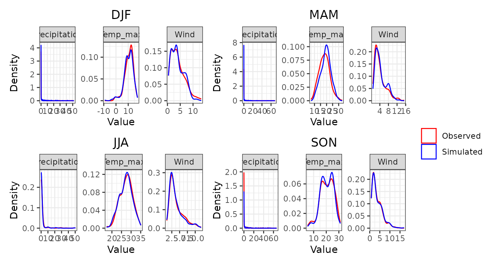

Introduction
This vignette provides a step-by-step guide on running a stochastic
weather generator using the MSTWeatherGen package. From
loading the historical weather data and spatial coordinates, performing
parameter estimation, to running simulations and generating validation
plots. This guide covers all you need to get started with
MSTWeatherGen, but does not provide the technical details
of the methods considered.
Data
Toy data
For our simulation, we will need historical weather data of multiple variables and geographic coordinates. Below, we load these datasets stored within the package.
The data considered here is the meteorological dataset SAFRAN, developed by Météo-France. We only consider a small region in the south of France for the period 2017-2021. We consider 3 variables: precipitation, wind, and maximum temperature.
Note on data needed for MSTWeatherGen
MSTWeatherGen is designed for multivariate and
spatio-temporal weather generation. Therefore, the meteorological data
to be used (here data) needs to be multiple variables (at
least two variables) defined in a spatial domain (characterized by
coordinates) and a temporal domain (defined by
dates). Thus, the data needs to be in three dimensions
(timelocationvariable).
Alongside the meteorological data, the user needs to provide a two
column matrix of coordinates of each locations considered. Each row
i of this matrix (coordinates[i,]) corresponds
to the x and y coordinates of the datum data[,i,]. Finally,
the user needs also to provide the time (dates here)
corresponding to each point in the first dimension of
data.
Another important point about the meteorological data is the
precipitation variable. Being a special variable in the estimation and
simulation (as it has many zeros), if it is considered, it has to be the
first variable in the meteorological data. If the user wants, one can
also provide the names of the variables considered (here
names).
Estimation
With the data loaded, we proceed to estimate the parameters required
for simulation. This involves determining weather types, computing
transition probabilities between weather types, estimating the
transformation functions of the variables into normal distribution, and
finally estimating the parameters of the multivariate spatio-temporal
covariance function, all using the MSTWeatherGen_Estim
function.
Before heading to the estimation, we will detail some important
considerations that will help the user use the
MSTWeatherGen_Estim function. First, if the data exhibit
seasonality, it has to be handled somehow. Here, propose to treat each
season separately meaning that the parameters of the model (weather
types, transformation functions, and covariance function) are estimated
at each season. The seasons are up to the user to define using the
following format:
seasons <- list(
s1 = list(min_day = 1, max_day = 29, min_month = 12, max_month = 2),
s2 = list(min_day = 1, max_day = 31, min_month = 3, max_month = 5),
s3 = list(min_day = 1, max_day = 31, min_month = 6, max_month = 8),
s4 = list(min_day = 1, max_day = 30, min_month = 9, max_month = 11)
)We can also provide the names of each season, to be used later for the validation plots:
names_seasons = c("DJF", "MAM", "JJA", "SON")If the considered data does not exhibit seasonality one can use the
whole period to estimate the parameters. To do that, one needs to fix
the argument by_season of the
MSTWeatherGen_Estim as False.
All the data being ready, we can now proceed to the estimation of the
parameters using MSTWeatherGen_Estim function.
names_weather_types = names
swg = MSTWeatherGen_Estim(data = data, seasons = seasons,dates = dates, names = names, by_season = T, scale = T,
precipitation = T,names_weather_types = names_weather_types,
coordinates= coordinates, max_it=100, tmax=1, n1=3, n2=3)
#> ---Final iteration--- 27
#> --Singular Value-- 2164.916 -- Local Percent -- 70.26529 %
#> ---Final iteration--- 34
#> --Singular Value-- 412.6398 -- Local Percent -- 45.76965 %
#> ---Final iteration--- 1
#> --Singular Value-- 144.612 -- Local Percent -- 56.13031 %
#>
#> -----Execution Time----- 2.99
#> Nelder-Mead direct search function minimizer
#> function value for initial parameters = 137.498584
#> Scaled convergence tolerance is 2.04889e-06
#> Stepsize computed as 0.100000
#> BUILD 3 137.534475 137.483541
#> Nelder-Mead direct search function minimizer
#> EXTENSION 5 137.498584 137.171996
#> function value for initial parameters = 840.657016
#> Scaled convergence tolerance is 1.25268e-05
#> Stepsize computed as 0.100000
#> EXTENSION 7 137.483541 136.447626
#> BUILD 3 840.765597 840.611500
#> EXTENSION 9 137.171996 115.499672
#> EXTENSION 5 840.657016 839.669532
#> REFLECTION 11 136.447626 93.498874
#> HI-REDUCTION 13 130.857143 93.498874
#> EXTENSION 7 840.611500 837.478171
#> HI-REDUCTION 15 122.896231 93.498874
#> REFLECTION 17 115.499672 66.369290
#> EXTENSION 9 839.669532 768.208721
#> HI-REDUCTION 19 102.760656 66.369290
#> REFLECTION 11 837.478171 687.893996
#> REFLECTION 21 93.498874 51.712460
#> HI-REDUCTION 13 820.319814 687.893996
#> HI-REDUCTION 23 78.741403 51.712460
#> HI-REDUCTION 15 794.432656 687.893996
#> REFLECTION 17 768.208721 659.608160
#> HI-REDUCTION 25 68.894723 51.712460
#> HI-REDUCTION 19 720.713664 659.608160
#> LO-REDUCTION 27 66.369290 51.712460
#> HI-REDUCTION 21 688.464622 659.608160
#> HI-REDUCTION 29 58.132791 51.712460
#> REFLECTION 23 687.893996 658.442180
#> HI-REDUCTION 31 54.427472 51.712460
#> HI-REDUCTION 25 659.608160 656.216700
#> LO-REDUCTION 33 52.620820 51.712460
#> LO-REDUCTION 27 658.442180 650.697402
#> HI-REDUCTION 35 51.929025 51.712460
#> HI-REDUCTION 29 656.216700 647.452817
#> HI-REDUCTION 37 51.753822 51.712460
#> LO-REDUCTION 31 650.697402 647.452817
#> HI-REDUCTION 39 51.748538 51.712460
#> HI-REDUCTION 33 648.268332 647.452817
#> HI-REDUCTION 41 51.717332 51.712460
#> HI-REDUCTION 35 647.638057 647.452817
#> HI-REDUCTION 43 51.717125 51.712460
#> HI-REDUCTION 37 647.594296 647.452817
#> LO-REDUCTION 45 51.712527 51.711557
#> LO-REDUCTION 39 647.503462 647.452817
#> EXTENSION 41 647.498230 647.379570
#> REFLECTION 47 51.712460 51.711220
#> REFLECTION 49 51.711557 51.710760
#> LO-REDUCTION 43 647.452817 647.379570
#> REFLECTION 51 51.711220 51.710160
#> EXTENSION 45 647.398920 647.245222
#> REFLECTION 53 51.710760 51.710127
#> LO-REDUCTION 47 647.379570 647.245222
#> REFLECTION 55 51.710160 51.709272
#> EXTENSION 49 647.258055 646.983043
#> LO-REDUCTION 57 51.710127 51.709272
#> REFLECTION 59 51.709275 51.709221
#> EXTENSION 51 647.245222 646.808841
#> HI-REDUCTION 61 51.709272 51.708880
#> EXTENSION 53 646.983043 646.202286
#> EXTENSION 63 51.709221 51.708310
#> EXTENSION 55 646.808841 645.349204
#> LO-REDUCTION 65 51.708880 51.708310
#> LO-REDUCTION 57 646.202286 645.349204
#> EXTENSION 67 51.708559 51.707660
#> REFLECTION 59 645.546334 645.037507
#> LO-REDUCTION 69 51.708310 51.707660
#> EXTENSION 61 645.349204 644.038876
#> EXTENSION 71 51.707666 51.707204
#> LO-REDUCTION 63 645.037507 644.038876
#> LO-REDUCTION 73 51.707660 51.707197
#> EXTENSION 65 644.423837 642.667267
#> LO-REDUCTION 75 51.707293 51.707197
#> LO-REDUCTION 67 644.038876 642.667267
#> LO-REDUCTION 77 51.707204 51.707195
#> REFLECTION 69 643.342410 642.502602
#> HI-REDUCTION 79 51.707197 51.707168
#> EXTENSION 71 642.667267 641.431723
#> LO-REDUCTION 81 51.707195 51.707168
#> LO-REDUCTION 73 642.502602 641.431723
#> LO-REDUCTION 83 51.707178 51.707168
#> HI-REDUCTION 75 641.754719 641.431723
#> LO-REDUCTION 85 51.707176 51.707168
#> HI-REDUCTION 77 641.582267 641.431723
#> LO-REDUCTION 79 641.479050 641.367976
#> REFLECTION 87 51.707173 51.707167
#> HI-REDUCTION 81 641.431723 641.355692
#> Exiting from Nelder Mead minimizer
#> 89 function evaluations used
#> Nelder-Mead direct search function minimizer
#> HI-REDUCTION 83 641.367976 641.355692
#> function value for initial parameters = 860.451448
#> Scaled convergence tolerance is 1.28217e-05
#> Stepsize computed as 0.100000
#> LO-REDUCTION 85 641.365618 641.347619
#> BUILD 3 860.574091 860.400031
#> HI-REDUCTION 87 641.355692 641.347483
#> EXTENSION 5 860.451448 859.335708
#> HI-REDUCTION 89 641.347970 641.347483
#> EXTENSION 7 860.400031 856.855458
#> HI-REDUCTION 91 641.347619 641.346354
#> EXTENSION 9 859.335708 769.995702
#> REFLECTION 11 856.855458 639.799523
#> HI-REDUCTION 93 641.347483 641.346349
#> HI-REDUCTION 13 837.058719 639.799523
#> HI-REDUCTION 15 805.232688 639.799523
#> HI-REDUCTION 95 641.346354 641.346181
#> REFLECTION 17 769.995702 439.713375
#> HI-REDUCTION 19 698.451662 439.713375
#> HI-REDUCTION 97 641.346349 641.346115
#> REFLECTION 21 639.799523 314.897684
#> HI-REDUCTION 23 534.977985 314.897684
#> REFLECTION 99 641.346181 641.346113
#> HI-REDUCTION 25 460.144269 314.897684
#> Exiting from Nelder Mead minimizer
#> 101 function evaluations used
#> LO-REDUCTION 27 439.713375 314.897684
#> HI-REDUCTION 29 362.130420 314.897684
#> HI-REDUCTION 31 327.920337 314.897684
#> HI-REDUCTION 33 319.424850 314.897684
#> HI-REDUCTION 35 316.692268 313.562565
#> LO-REDUCTION 37 314.897684 313.562565
#> HI-REDUCTION 39 313.937062 313.562565
#> REFLECTION 41 313.825898 313.556347
#> EXTENSION 43 313.562565 313.183306
#> EXTENSION 45 313.556347 312.587794
#> REFLECTION 47 313.183306 312.092917
#> REFLECTION 49 312.587794 311.578993
#> EXTENSION 51 312.092917 310.789895
#> EXTENSION 53 311.578993 308.143322
#> EXTENSION 55 310.789895 304.610766
#> REFLECTION 57 308.143322 300.940751
#> REFLECTION 59 304.610766 294.258220
#> HI-REDUCTION 61 300.940751 294.258220
#> HI-REDUCTION 63 299.755985 294.258220
#> LO-REDUCTION 65 298.019733 294.258220
#> LO-REDUCTION 67 294.757299 293.653609
#> HI-REDUCTION 69 294.258220 293.653609
#> LO-REDUCTION 71 294.095116 293.653609
#> HI-REDUCTION 73 293.856634 293.653609
#> LO-REDUCTION 75 293.822029 293.653609
#> LO-REDUCTION 77 293.675984 293.645675
#> HI-REDUCTION 79 293.653609 293.645675
#> LO-REDUCTION 81 293.646656 293.641698
#> HI-REDUCTION 83 293.645675 293.640803
#> HI-REDUCTION 85 293.641698 293.640803
#> LO-REDUCTION 87 293.641217 293.640656
#> HI-REDUCTION 89 293.640803 293.640446
#> HI-REDUCTION 91 293.640656 293.640390
#> LO-REDUCTION 93 293.640446 293.640319
#> HI-REDUCTION 95 293.640390 293.640319
#> HI-REDUCTION 97 293.640335 293.640319
#> Exiting from Nelder Mead minimizer
#> 99 function evaluations used
#> Nelder-Mead direct search function minimizer
#> function value for initial parameters = 213.419061
#> Scaled convergence tolerance is 3.18019e-06
#> Stepsize computed as 0.100000
#> BUILD 3 213.419721 213.418801
#> Nelder-Mead direct search function minimizer
#> EXTENSION 5 213.419061 213.408211
#> function value for initial parameters = 425.136428
#> Scaled convergence tolerance is 6.33503e-06
#> Stepsize computed as 0.100000
#> EXTENSION 7 213.418801 213.369446
#> BUILD 3 425.137695 425.135929
#> EXTENSION 9 213.408211 207.169607
#> EXTENSION 5 425.136428 425.115635
#> REFLECTION 11 213.369446 192.847900
#> HI-REDUCTION 13 212.621355 192.847900
#> EXTENSION 7 425.135929 425.041471
#> HI-REDUCTION 15 210.410565 192.847900
#> EXTENSION 9 425.115635 413.686806
#> REFLECTION 17 207.169607 165.091077
#> REFLECTION 11 425.041471 389.070284
#> HI-REDUCTION 19 199.662894 165.091077
#> HI-REDUCTION 13 423.627774 389.070284
#> REFLECTION 21 192.847900 161.326881
#> HI-REDUCTION 15 419.544744 389.070284
#> REFLECTION 17 413.686806 346.130926
#> HI-REDUCTION 23 178.777228 161.326881
#> HI-REDUCTION 19 400.536020 346.130926
#> HI-REDUCTION 25 168.087370 161.326881
#> LO-REDUCTION 21 389.070284 346.130926
#> HI-REDUCTION 27 165.091077 161.326881
#> HI-REDUCTION 23 371.962273 346.130926
#> HI-REDUCTION 29 162.161201 160.025942
#> LO-REDUCTION 25 347.314622 336.734166
#> HI-REDUCTION 31 161.326881 158.378052
#> REFLECTION 27 346.130926 336.039270
#> HI-REDUCTION 33 160.025942 156.083170
#> HI-REDUCTION 29 339.902562 336.039270
#> LO-REDUCTION 35 158.378052 156.083170
#> HI-REDUCTION 31 337.595389 336.039270
#> HI-REDUCTION 37 156.867674 156.083170
#> LO-REDUCTION 33 336.734166 336.039270
#> LO-REDUCTION 39 156.152221 156.083170
#> LO-REDUCTION 35 336.372800 336.039270
#> HI-REDUCTION 41 156.140924 156.083170
#> EXTENSION 37 336.061734 335.358419
#> REFLECTION 43 156.089566 156.060349
#> LO-REDUCTION 39 336.039270 335.358419
#> EXTENSION 45 156.083170 156.012079
#> EXTENSION 41 335.679226 334.582290
#> REFLECTION 47 156.060349 155.993005
#> EXTENSION 43 335.358419 333.283894
#> EXTENSION 49 156.012079 155.914152
#> EXTENSION 45 334.582290 332.611091
#> EXTENSION 51 155.993005 155.776237
#> REFLECTION 47 333.283894 331.402977
#> EXTENSION 53 155.914152 155.678746
#> HI-REDUCTION 49 332.611091 331.402977
#> EXTENSION 55 155.776237 155.123677
#> EXTENSION 51 332.172860 330.008604
#> LO-REDUCTION 57 155.678746 155.123677
#> EXTENSION 53 331.402977 328.538211
#> EXTENSION 59 155.238789 153.831020
#> EXTENSION 55 330.008604 323.064957
#> LO-REDUCTION 61 155.123677 153.831020
#> LO-REDUCTION 57 328.538211 323.064957
#> EXTENSION 63 154.177748 150.578924
#> REFLECTION 59 323.915943 320.164568
#> LO-REDUCTION 65 153.831020 150.578924
#> HI-REDUCTION 61 323.064957 320.164568
#> REFLECTION 67 150.965458 147.835919
#> EXTENSION 63 321.261071 316.713124
#> EXTENSION 69 150.578924 144.108116
#> HI-REDUCTION 65 320.164568 316.713124
#> HI-REDUCTION 71 147.947694 144.108116
#> HI-REDUCTION 67 318.774276 316.713124
#> LO-REDUCTION 73 147.835919 144.108116
#> LO-REDUCTION 69 318.133541 316.644615
#> LO-REDUCTION 75 144.975141 143.028730
#> HI-REDUCTION 77 144.108116 143.028730
#> HI-REDUCTION 71 316.901876 316.644615
#> REFLECTION 79 143.795382 143.025091
#> HI-REDUCTION 73 316.713124 316.578176
#> REFLECTION 81 143.028730 142.483810
#> HI-REDUCTION 75 316.644615 316.522705
#> LO-REDUCTION 83 143.025091 142.483810
#> LO-REDUCTION 77 316.578176 316.522705
#> HI-REDUCTION 85 142.602488 142.483810
#> REFLECTION 87 142.570906 142.467419
#> HI-REDUCTION 79 316.538961 316.522705
#> HI-REDUCTION 89 142.483810 142.354166
#> LO-REDUCTION 81 316.527713 316.515435
#> LO-REDUCTION 91 142.467419 142.352337
#> HI-REDUCTION 83 316.522705 316.513092
#> HI-REDUCTION 93 142.365810 142.352337
#> HI-REDUCTION 95 142.354166 142.346242
#> HI-REDUCTION 85 316.515435 316.513092
#> HI-REDUCTION 97 142.352337 142.343891
#> LO-REDUCTION 87 316.514531 316.512454
#> LO-REDUCTION 99 142.346242 142.343583
#> Exiting from Nelder Mead minimizer
#> 101 function evaluations used
#> Nelder-Mead direct search function minimizer
#> HI-REDUCTION 89 316.513092 316.512371
#> function value for initial parameters = 427.510241
#> Scaled convergence tolerance is 6.3704e-06
#> Stepsize computed as 0.100000
#> HI-REDUCTION 91 316.512454 316.512239
#> BUILD 3 427.511866 427.509601
#> EXTENSION 5 427.510241 427.483592
#> LO-REDUCTION 93 316.512371 316.512144
#> EXTENSION 7 427.509601 427.388706
#> HI-REDUCTION 95 316.512239 316.512134
#> EXTENSION 9 427.483592 413.060852
#> REFLECTION 11 427.388706 379.516434
#> HI-REDUCTION 13 425.595563 379.516434
#> HI-REDUCTION 97 316.512144 316.512105
#> HI-REDUCTION 15 420.456575 379.516434
#> REFLECTION 17 413.060852 294.817564
#> LO-REDUCTION 99 316.512134 316.512104
#> HI-REDUCTION 19 395.813571 294.817564
#> REFLECTION 21 379.516434 185.922950
#> HI-REDUCTION 23 341.770801 185.922950
#> Exiting from Nelder Mead minimizer
#> 101 function evaluations used
#> REFLECTION 25 294.817564 165.006554
#> HI-REDUCTION 27 224.290504 165.006554
#> HI-REDUCTION 29 185.922950 165.006554
#> HI-REDUCTION 31 174.202753 149.086923
#> HI-REDUCTION 33 165.006554 136.047271
#> HI-REDUCTION 35 149.086923 99.759277
#> REFLECTION 37 136.047271 95.152639
#> HI-REDUCTION 39 112.840523 95.152639
#> LO-REDUCTION 41 99.759277 95.152639
#> HI-REDUCTION 43 96.195091 95.152639
#> HI-REDUCTION 45 95.955617 95.152639
#> HI-REDUCTION 47 95.343843 95.152639
#> HI-REDUCTION 49 95.304574 95.152639
#> HI-REDUCTION 51 95.222873 95.152639
#> EXTENSION 53 95.202457 95.121638
#> EXTENSION 55 95.152639 94.944563
#> LO-REDUCTION 57 95.121638 94.944563
#> EXTENSION 59 94.950122 94.573572
#> LO-REDUCTION 61 94.944563 94.573572
#> EXTENSION 63 94.749637 94.138178
#> EXTENSION 65 94.573572 93.460279
#> EXTENSION 67 94.138178 92.489433
#> EXTENSION 69 93.460279 90.287365
#> REFLECTION 71 92.489433 90.184225
#> EXTENSION 73 90.287365 87.902418
#> HI-REDUCTION 75 90.184225 87.902418
#> REFLECTION 77 89.005005 86.351739
#> HI-REDUCTION 79 87.902418 86.351739
#> EXTENSION 81 87.481313 85.883081
#> EXTENSION 83 86.351739 81.766968
#> LO-REDUCTION 85 85.883081 81.766968
#> EXTENSION 87 82.867564 72.857330
#> LO-REDUCTION 89 81.766968 72.857330
#> EXTENSION 91 77.161629 67.343542
#> EXTENSION 93 72.857330 40.083954
#> HI-REDUCTION 95 67.343542 40.083954
#> LO-REDUCTION 97 62.528589 40.083954
#> HI-REDUCTION 99 52.846703 40.083954
#> Exiting from Nelder Mead minimizer
#> 101 function evaluations used
#> Nelder-Mead direct search function minimizer
#> function value for initial parameters = 46.631207
#> Scaled convergence tolerance is 6.94859e-07
#> Stepsize computed as 0.100000
#> BUILD 3 46.645372 46.625273
#> Nelder-Mead direct search function minimizer
#> function value for initial parameters = 1096.493892
#> Scaled convergence tolerance is 1.6339e-05
#> Stepsize computed as 0.100000
#> EXTENSION 5 46.631207 46.502510
#> BUILD 3 1096.573608 1096.460483
#> EXTENSION 7 46.625273 46.218823
#> EXTENSION 9 46.502510 39.729807
#> EXTENSION 5 1096.493892 1095.767646
#> REFLECTION 11 46.218823 34.967793
#> HI-REDUCTION 13 44.140403 34.967793
#> EXTENSION 7 1096.460483 1094.153847
#> HI-REDUCTION 15 41.615457 34.967793
#> REFLECTION 17 39.729807 27.403846
#> EXTENSION 9 1095.767646 1045.671975
#> HI-REDUCTION 19 36.985611 27.403846
#> REFLECTION 11 1094.153847 969.522338
#> REFLECTION 21 34.967793 22.975036
#> HI-REDUCTION 13 1081.632245 969.522338
#> HI-REDUCTION 15 1063.560030 969.522338
#> HI-REDUCTION 23 31.054299 22.975036
#> REFLECTION 17 1045.671975 765.598243
#> HI-REDUCTION 25 28.186290 22.975036
#> HI-REDUCTION 19 1007.425167 765.598243
#> REFLECTION 21 969.522338 508.208974
#> REFLECTION 27 27.403846 22.757093
#> HI-REDUCTION 23 878.099526 508.208974
#> HI-REDUCTION 29 24.699577 22.757093
#> LO-REDUCTION 25 765.598243 441.382482
#> HI-REDUCTION 31 23.523696 22.757093
#> HI-REDUCTION 27 645.991797 441.382482
#> LO-REDUCTION 33 22.975036 22.757093
#> REFLECTION 29 508.208974 312.822656
#> HI-REDUCTION 35 22.820106 22.757093
#> LO-REDUCTION 31 441.382482 312.822656
#> HI-REDUCTION 37 22.797051 22.757093
#> HI-REDUCTION 33 361.630160 312.822656
#> HI-REDUCTION 39 22.771845 22.757093
#> HI-REDUCTION 35 329.213712 312.822656
#> REFLECTION 41 22.765686 22.752987
#> HI-REDUCTION 37 318.089214 312.822656
#> EXTENSION 43 22.757093 22.740316
#> LO-REDUCTION 39 313.211566 312.822656
#> EXTENSION 45 22.752987 22.709342
#> HI-REDUCTION 41 312.877038 312.701704
#> EXTENSION 47 22.740316 22.695067
#> HI-REDUCTION 43 312.822656 312.701704
#> EXTENSION 49 22.709342 22.552875
#> EXTENSION 45 312.712612 312.338697
#> EXTENSION 51 22.695067 22.491051
#> LO-REDUCTION 47 312.701704 312.338697
#> EXTENSION 53 22.552875 21.919727
#> REFLECTION 55 22.491051 21.523426
#> EXTENSION 49 312.555592 311.866580
#> HI-REDUCTION 57 21.999924 21.523426
#> EXTENSION 51 312.338697 311.373560
#> EXTENSION 53 311.866580 310.152330
#> HI-REDUCTION 59 21.919727 21.523426
#> LO-REDUCTION 55 311.373560 310.152330
#> HI-REDUCTION 61 21.772952 21.523426
#> REFLECTION 57 310.493451 310.139355
#> LO-REDUCTION 63 21.740839 21.523426
#> REFLECTION 59 310.152330 309.610518
#> HI-REDUCTION 65 21.626254 21.523426
#> HI-REDUCTION 61 310.139355 309.610518
#> LO-REDUCTION 67 21.606237 21.523426
#> REFLECTION 63 309.820949 309.499216
#> LO-REDUCTION 69 21.543938 21.523426
#> EXTENSION 65 309.610518 309.038566
#> REFLECTION 71 21.523539 21.522674
#> LO-REDUCTION 67 309.499216 309.038566
#> HI-REDUCTION 73 21.523426 21.518295
#> REFLECTION 69 309.039325 308.747245
#> HI-REDUCTION 75 21.522674 21.517836
#> HI-REDUCTION 71 309.038566 308.747245
#> HI-REDUCTION 77 21.518305 21.517836
#> REFLECTION 73 308.852228 308.675922
#> HI-REDUCTION 79 21.518295 21.517505
#> LO-REDUCTION 81 21.517836 21.517505
#> LO-REDUCTION 75 308.747245 308.675922
#> HI-REDUCTION 83 21.517617 21.517483
#> HI-REDUCTION 77 308.679169 308.675922
#> HI-REDUCTION 85 21.517505 21.517415
#> HI-REDUCTION 79 308.678839 308.661988
#> HI-REDUCTION 87 21.517483 21.517358
#> HI-REDUCTION 81 308.675922 308.658783
#> LO-REDUCTION 89 21.517415 21.517358
#> HI-REDUCTION 83 308.661988 308.658783
#> HI-REDUCTION 91 21.517369 21.517358
#> LO-REDUCTION 85 308.659056 308.656874
#> HI-REDUCTION 93 21.517367 21.517358
#> HI-REDUCTION 87 308.658783 308.656781
#> LO-REDUCTION 95 21.517360 21.517356
#> HI-REDUCTION 89 308.656874 308.656543
#> HI-REDUCTION 97 21.517358 21.517356
#> HI-REDUCTION 91 308.656781 308.656471
#> Exiting from Nelder Mead minimizer
#> 99 function evaluations used
#> Nelder-Mead direct search function minimizer
#> function value for initial parameters = 1099.492608
#> Scaled convergence tolerance is 1.63837e-05
#> Stepsize computed as 0.100000
#> LO-REDUCTION 93 308.656543 308.656390
#> BUILD 3 1099.571853 1099.459397
#> HI-REDUCTION 95 308.656471 308.656357
#> EXTENSION 5 1099.492608 1098.770699
#> HI-REDUCTION 97 308.656390 308.656312
#> EXTENSION 7 1099.459397 1097.166815
#> LO-REDUCTION 99 308.656357 308.656312
#> EXTENSION 9 1098.770699 1048.846776
#> Exiting from Nelder Mead minimizer
#> 101 function evaluations used
#> REFLECTION 11 1097.166815 970.644924
#> HI-REDUCTION 13 1084.732656 970.644924
#> HI-REDUCTION 15 1066.775173 970.644924
#> REFLECTION 17 1048.846776 753.358960
#> HI-REDUCTION 19 1009.862676 753.358960
#> REFLECTION 21 970.644924 464.536813
#> HI-REDUCTION 23 874.315948 464.536813
#> REFLECTION 25 753.358960 193.962649
#> HI-REDUCTION 27 568.926137 193.962649
#> HI-REDUCTION 29 464.536813 193.962649
#> LO-REDUCTION 31 431.967364 139.145274
#> HI-REDUCTION 33 258.994079 139.145274
#> HI-REDUCTION 35 193.962649 139.145274
#> HI-REDUCTION 37 171.829307 136.605495
#> HI-REDUCTION 39 148.505167 136.605495
#> LO-REDUCTION 41 139.145274 136.605495
#> HI-REDUCTION 43 136.958601 136.033035
#> LO-REDUCTION 45 136.605495 136.033035
#> HI-REDUCTION 47 136.090329 135.957224
#> EXTENSION 49 136.033035 135.644074
#> HI-REDUCTION 51 135.957224 135.644074
#> EXTENSION 53 135.801207 135.314801
#> EXTENSION 55 135.644074 134.682124
#> EXTENSION 57 135.314801 133.988996
#> EXTENSION 59 134.682124 131.726796
#> EXTENSION 61 133.988996 130.828691
#> EXTENSION 63 131.726796 123.757184
#> LO-REDUCTION 65 130.828691 123.757184
#> EXTENSION 67 127.048598 118.579100
#> EXTENSION 69 123.757184 106.239129
#> HI-REDUCTION 71 118.579100 106.239129
#> EXTENSION 73 115.702463 96.431815
#> EXTENSION 75 106.239129 80.638999
#> REFLECTION 77 96.431815 61.244741
#> HI-REDUCTION 79 80.638999 61.244741
#> HI-REDUCTION 81 76.569271 61.244741
#> REFLECTION 83 66.423707 54.181773
#> HI-REDUCTION 85 61.244741 54.181773
#> LO-REDUCTION 87 58.562918 54.181773
#> HI-REDUCTION 89 55.238706 54.181773
#> HI-REDUCTION 91 55.021776 54.163731
#> HI-REDUCTION 93 54.181773 53.945793
#> HI-REDUCTION 95 54.163731 53.589908
#> LO-REDUCTION 97 53.945793 53.589908
#> HI-REDUCTION 99 53.685816 53.589908
#> Exiting from Nelder Mead minimizer
#> 101 function evaluations used
#> Nelder-Mead direct search function minimizer
#> function value for initial parameters = 383.999731
#> Scaled convergence tolerance is 5.72204e-06
#> Stepsize computed as 0.100000
#> BUILD 3 384.000712 383.999344
#> Nelder-Mead direct search function minimizer
#> EXTENSION 5 383.999731 383.983476
#> function value for initial parameters = 423.937267
#> Scaled convergence tolerance is 6.31716e-06
#> Stepsize computed as 0.100000
#> EXTENSION 7 383.999344 383.924577
#> BUILD 3 423.938785 423.936668
#> EXTENSION 9 383.983476 372.254659
#> EXTENSION 5 423.937267 423.912260
#> REFLECTION 11 383.924577 343.629720
#> HI-REDUCTION 13 382.693419 343.629720
#> EXTENSION 7 423.936668 423.822580
#> HI-REDUCTION 15 378.640632 343.629720
#> REFLECTION 17 372.254659 290.982920
#> EXTENSION 9 423.912260 409.063029
#> HI-REDUCTION 19 357.147357 290.982920
#> REFLECTION 11 423.822580 376.208053
#> REFLECTION 21 343.629720 275.985937
#> HI-REDUCTION 13 422.061224 376.208053
#> HI-REDUCTION 23 316.691674 275.985937
#> HI-REDUCTION 15 416.781227 376.208053
#> REFLECTION 17 409.063029 316.283054
#> HI-REDUCTION 25 296.620264 275.985937
#> HI-REDUCTION 19 391.593954 316.283054
#> REFLECTION 21 376.208053 290.798695
#> HI-REDUCTION 23 345.693706 290.798695
#> LO-REDUCTION 27 290.982920 270.968389
#> HI-REDUCTION 25 322.716085 290.798695
#> HI-REDUCTION 29 275.985937 270.968389
#> LO-REDUCTION 27 316.283054 288.621130
#> HI-REDUCTION 31 275.885956 270.968389
#> HI-REDUCTION 29 297.774083 288.621130
#> HI-REDUCTION 33 271.781669 270.968389
#> HI-REDUCTION 31 290.798695 288.621130
#> HI-REDUCTION 35 271.009290 270.813489
#> HI-REDUCTION 33 290.748609 288.621130
#> REFLECTION 37 270.968389 270.592428
#> HI-REDUCTION 35 289.203906 288.621130
#> HI-REDUCTION 39 270.813489 270.592428
#> HI-REDUCTION 37 288.770396 288.621130
#> REFLECTION 41 270.660881 270.537415
#> HI-REDUCTION 39 288.699943 288.621130
#> EXTENSION 43 270.592428 270.292748
#> HI-REDUCTION 41 288.656211 288.621130
#> EXTENSION 45 270.537415 270.200856
#> EXTENSION 43 288.627409 288.588773
#> EXTENSION 47 270.292748 269.336987
#> EXTENSION 45 288.621130 288.507850
#> REFLECTION 49 270.200856 269.320144
#> REFLECTION 47 288.588773 288.501476
#> EXTENSION 51 269.336987 267.545440
#> EXTENSION 49 288.507850 288.337506
#> EXTENSION 53 269.320144 265.509125
#> REFLECTION 55 267.545440 264.297508
#> EXTENSION 51 288.501476 288.209639
#> EXTENSION 57 265.509125 257.161029
#> EXTENSION 53 288.337506 287.893655
#> HI-REDUCTION 59 264.297508 257.161029
#> EXTENSION 55 288.209639 287.198463
#> REFLECTION 61 262.720664 256.177681
#> LO-REDUCTION 57 287.893655 287.198463
#> LO-REDUCTION 63 257.161029 254.778401
#> EXTENSION 59 287.304095 286.192793
#> LO-REDUCTION 61 287.198463 286.192793
#> LO-REDUCTION 65 256.177681 254.659312
#> LO-REDUCTION 63 286.630497 286.148722
#> LO-REDUCTION 65 286.192793 286.115734
#> HI-REDUCTION 67 254.815894 254.659312
#> HI-REDUCTION 67 286.148722 286.115734
#> HI-REDUCTION 69 286.124138 286.111768
#> LO-REDUCTION 69 254.778401 254.256714
#> HI-REDUCTION 71 286.115734 286.104977
#> HI-REDUCTION 71 254.659312 254.226884
#> HI-REDUCTION 73 286.111768 286.100783
#> HI-REDUCTION 73 254.256714 254.163447
#> LO-REDUCTION 75 286.104977 286.100783
#> LO-REDUCTION 75 254.226884 254.160176
#> HI-REDUCTION 77 286.101175 286.100783
#> HI-REDUCTION 77 254.163447 254.139723
#> HI-REDUCTION 79 286.101073 286.100450
#> HI-REDUCTION 79 254.160176 254.139723
#> HI-REDUCTION 81 286.100783 286.100328
#> REFLECTION 81 254.140200 254.125052
#> HI-REDUCTION 83 286.100450 286.100309
#> HI-REDUCTION 83 254.139723 254.125052
#> REFLECTION 85 286.100328 286.100307
#> REFLECTION 85 254.127462 254.119511
#> HI-REDUCTION 87 286.100309 286.100232
#> LO-REDUCTION 87 254.125052 254.119511
#> HI-REDUCTION 89 286.100307 286.100232
#> LO-REDUCTION 89 254.120082 254.119511
#> LO-REDUCTION 91 286.100245 286.100232
#> HI-REDUCTION 91 254.119573 254.118605
#> HI-REDUCTION 93 286.100243 286.100231
#> LO-REDUCTION 93 254.119511 254.118605
#> Exiting from Nelder Mead minimizer
#> 95 function evaluations used
#> LO-REDUCTION 95 254.118802 254.118605
#> HI-REDUCTION 97 254.118784 254.118605
#> HI-REDUCTION 99 254.118639 254.118605
#> Exiting from Nelder Mead minimizer
#> 101 function evaluations used
#> Nelder-Mead direct search function minimizer
#> function value for initial parameters = 426.280841
#> Scaled convergence tolerance is 6.35208e-06
#> Stepsize computed as 0.100000
#> BUILD 3 426.282501 426.280186
#> EXTENSION 5 426.280841 426.253491
#> EXTENSION 7 426.280186 426.155319
#> EXTENSION 9 426.253491 409.599438
#> REFLECTION 11 426.155319 370.404244
#> HI-REDUCTION 13 424.215322 370.404244
#> HI-REDUCTION 15 418.330809 370.404244
#> REFLECTION 17 409.599438 279.189862
#> HI-REDUCTION 19 389.256216 279.189862
#> REFLECTION 21 370.404244 168.058726
#> HI-REDUCTION 23 328.668480 168.058726
#> LO-REDUCTION 25 279.189862 139.710938
#> HI-REDUCTION 27 227.127803 139.710938
#> REFLECTION 29 168.058726 85.103598
#> LO-REDUCTION 31 139.710938 84.993472
#> HI-REDUCTION 33 105.965418 84.993472
#> HI-REDUCTION 35 92.200773 84.993472
#> HI-REDUCTION 37 87.414547 84.993472
#> LO-REDUCTION 39 85.103598 84.993472
#> EXTENSION 41 85.088436 84.404169
#> LO-REDUCTION 43 84.993472 84.404169
#> EXTENSION 45 84.577602 83.866326
#> HI-REDUCTION 47 84.404169 83.866326
#> EXTENSION 49 84.182098 82.880171
#> LO-REDUCTION 51 83.866326 82.880171
#> EXTENSION 53 83.098773 80.003833
#> LO-REDUCTION 55 82.880171 80.003833
#> EXTENSION 57 80.315995 71.247977
#> REFLECTION 59 80.003833 69.311849
#> HI-REDUCTION 61 75.383585 69.311849
#> LO-REDUCTION 63 71.247977 69.311849
#> EXTENSION 65 69.503598 67.017527
#> REFLECTION 67 69.311849 66.769648
#> HI-REDUCTION 69 67.268090 66.769648
#> HI-REDUCTION 71 67.017527 66.559414
#> HI-REDUCTION 73 66.769648 66.293095
#> HI-REDUCTION 75 66.559414 66.293095
#> REFLECTION 77 66.375654 66.162607
#> HI-REDUCTION 79 66.293095 66.162607
#> HI-REDUCTION 81 66.222423 66.162607
#> LO-REDUCTION 83 66.196028 66.157456
#> HI-REDUCTION 85 66.162607 66.157456
#> HI-REDUCTION 87 66.161721 66.153786
#> HI-REDUCTION 89 66.157456 66.153786
#> LO-REDUCTION 91 66.155858 66.153786
#> HI-REDUCTION 93 66.154644 66.153786
#> REFLECTION 95 66.154148 66.153779
#> HI-REDUCTION 97 66.153786 66.153587
#> HI-REDUCTION 99 66.153779 66.153559
#> Exiting from Nelder Mead minimizer
#> 101 function evaluations used
#> Nelder-Mead direct search function minimizer
#> function value for initial parameters = 180.769919
#> Scaled convergence tolerance is 2.69368e-06
#> Stepsize computed as 0.100000
#> BUILD 3 180.770619 180.769644
#> Nelder-Mead direct search function minimizer
#> EXTENSION 5 180.769919 180.758506
#> function value for initial parameters = 341.713416
#> Scaled convergence tolerance is 5.09193e-06
#> Stepsize computed as 0.100000
#> EXTENSION 7 180.769644 180.718235
#> BUILD 3 341.714679 341.712917
#> EXTENSION 9 180.758506 175.981090
#> EXTENSION 5 341.713416 341.692786
#> REFLECTION 11 180.718235 165.475431
#> HI-REDUCTION 13 180.006967 165.475431
#> EXTENSION 7 341.712917 341.620025
#> HI-REDUCTION 15 178.228744 165.475431
#> REFLECTION 17 175.981090 137.046199
#> EXTENSION 9 341.692786 333.309443
#> HI-REDUCTION 19 170.786557 137.046199
#> REFLECTION 11 341.620025 315.541630
#> REFLECTION 21 165.475431 108.244494
#> HI-REDUCTION 13 340.341751 315.541630
#> HI-REDUCTION 23 152.509361 108.244494
#> HI-REDUCTION 15 337.199724 315.541630
#> REFLECTION 17 333.309443 270.312748
#> HI-REDUCTION 25 140.736860 108.244494
#> HI-REDUCTION 19 324.471648 270.312748
#> REFLECTION 21 315.541630 237.997195
#> REFLECTION 27 137.046199 104.685421
#> HI-REDUCTION 23 294.193091 237.997195
#> HI-REDUCTION 29 121.973812 104.685421
#> HI-REDUCTION 25 275.845411 237.997195
#> HI-REDUCTION 31 113.476180 104.685421
#> LO-REDUCTION 27 270.312748 237.997195
#> LO-REDUCTION 33 108.244494 104.327043
#> HI-REDUCTION 29 253.146636 237.997195
#> LO-REDUCTION 35 104.702624 104.327043
#> HI-REDUCTION 31 244.861814 237.997195
#> HI-REDUCTION 37 104.685421 104.312754
#> LO-REDUCTION 33 240.480933 237.902924
#> LO-REDUCTION 39 104.327043 104.312754
#> HI-REDUCTION 35 238.715920 237.902924
#> HI-REDUCTION 41 104.315335 104.285212
#> LO-REDUCTION 37 238.007454 237.902924
#> HI-REDUCTION 43 104.312754 104.285212
#> HI-REDUCTION 39 237.997195 237.902924
#> EXTENSION 45 104.296229 104.244535
#> HI-REDUCTION 41 237.921553 237.902924
#> LO-REDUCTION 47 104.285212 104.244535
#> HI-REDUCTION 43 237.918028 237.902924
#> EXTENSION 49 104.268208 104.217941
#> REFLECTION 45 237.907444 237.900372
#> EXTENSION 51 104.244535 104.150426
#> EXTENSION 47 237.902924 237.883098
#> LO-REDUCTION 53 104.217941 104.150426
#> LO-REDUCTION 49 237.900372 237.883098
#> EXTENSION 55 104.156611 104.044248
#> EXTENSION 51 237.884645 237.850177
#> EXTENSION 57 104.150426 104.005587
#> LO-REDUCTION 53 237.883098 237.850177
#> EXTENSION 59 104.044248 103.853214
#> EXTENSION 55 237.868627 237.822124
#> EXTENSION 61 104.005587 103.818089
#> EXTENSION 57 237.850177 237.763015
#> REFLECTION 63 103.853214 103.718224
#> EXTENSION 59 237.822124 237.717689
#> LO-REDUCTION 65 103.818089 103.718224
#> REFLECTION 61 237.763015 237.664935
#> REFLECTION 67 103.732056 103.701568
#> LO-REDUCTION 63 237.717689 237.664935
#> HI-REDUCTION 69 103.718224 103.701125
#> LO-REDUCTION 65 237.681052 237.663537
#> EXTENSION 71 103.701568 103.670627
#> REFLECTION 67 237.664935 237.652331
#> LO-REDUCTION 73 103.701125 103.670627
#> LO-REDUCTION 69 237.663537 237.652331
#> REFLECTION 75 103.673999 103.668980
#> REFLECTION 71 237.655303 237.652317
#> HI-REDUCTION 73 237.652331 237.651074
#> HI-REDUCTION 77 103.670627 103.663544
#> LO-REDUCTION 75 237.652317 237.650615
#> EXTENSION 79 103.668980 103.652451
#> HI-REDUCTION 77 237.651074 237.650615
#> LO-REDUCTION 81 103.663544 103.652451
#> HI-REDUCTION 79 237.650797 237.650441
#> EXTENSION 83 103.656109 103.647170
#> LO-REDUCTION 81 237.650615 237.650407
#> HI-REDUCTION 85 103.652451 103.647170
#> HI-REDUCTION 83 237.650441 237.650407
#> REFLECTION 87 103.650016 103.645324
#> HI-REDUCTION 85 237.650429 237.650397
#> LO-REDUCTION 89 103.647170 103.645324
#> HI-REDUCTION 87 237.650407 237.650397
#> REFLECTION 91 103.646599 103.645239
#> Exiting from Nelder Mead minimizer
#> 89 function evaluations used
#> HI-REDUCTION 93 103.645451 103.645239
#> HI-REDUCTION 95 103.645324 103.645195
#> HI-REDUCTION 97 103.645239 103.645154
#> HI-REDUCTION 99 103.645195 103.645150
#> Exiting from Nelder Mead minimizer
#> 101 function evaluations used
#> Nelder-Mead direct search function minimizer
#> function value for initial parameters = 337.754619
#> Scaled convergence tolerance is 5.03294e-06
#> Stepsize computed as 0.100000
#> BUILD 3 337.755973 337.754085
#> EXTENSION 5 337.754619 337.732507
#> EXTENSION 7 337.754085 337.654517
#> EXTENSION 9 337.732507 328.639764
#> REFLECTION 11 337.654517 307.803119
#> HI-REDUCTION 13 336.283258 307.803119
#> HI-REDUCTION 15 332.896977 307.803119
#> REFLECTION 17 328.639764 243.669539
#> HI-REDUCTION 19 318.562585 243.669539
#> REFLECTION 21 307.803119 160.121022
#> HI-REDUCTION 23 279.748867 160.121022
#> REFLECTION 25 243.669539 155.180337
#> HI-REDUCTION 27 189.627929 155.180337
#> HI-REDUCTION 29 160.121022 151.238552
#> HI-REDUCTION 31 155.180337 131.990025
#> HI-REDUCTION 33 151.238552 99.963941
#> REFLECTION 35 131.990025 93.447306
#> HI-REDUCTION 37 110.401817 93.447306
#> LO-REDUCTION 39 99.963941 93.447306
#> HI-REDUCTION 41 94.299893 93.447306
#> HI-REDUCTION 43 93.870847 93.128039
#> LO-REDUCTION 45 93.447306 93.123268
#> HI-REDUCTION 47 93.128039 93.123268
#> HI-REDUCTION 49 93.125431 93.096102
#> HI-REDUCTION 51 93.123268 93.090132
#> REFLECTION 53 93.096102 93.084487
#> HI-REDUCTION 55 93.090132 93.084487
#> EXTENSION 57 93.084641 93.064113
#> LO-REDUCTION 59 93.084487 93.064113
#> EXTENSION 61 93.073588 93.035624
#> LO-REDUCTION 63 93.064113 93.035624
#> EXTENSION 65 93.035816 92.982524
#> EXTENSION 67 93.035624 92.947735
#> EXTENSION 69 92.982524 92.844019
#> EXTENSION 71 92.947735 92.692456
#> EXTENSION 73 92.844019 92.602067
#> REFLECTION 75 92.692456 92.427239
#> HI-REDUCTION 77 92.602067 92.427239
#> EXTENSION 79 92.555021 92.336252
#> EXTENSION 81 92.427239 91.954369
#> EXTENSION 83 92.336252 91.941585
#> EXTENSION 85 91.954369 91.004145
#> LO-REDUCTION 87 91.941585 91.004145
#> HI-REDUCTION 89 91.417975 91.004145
#> REFLECTION 91 91.179313 90.937919
#> HI-REDUCTION 93 91.004145 90.877933
#> EXTENSION 95 90.937919 90.670647
#> HI-REDUCTION 97 90.877933 90.670647
#> LO-REDUCTION 99 90.749533 90.659627
#> Exiting from Nelder Mead minimizer
#> 101 function evaluations used
#> ---Final iteration--- 17
#> --Singular Value-- 3707.34 -- Local Percent -- 88.08402 %
#> ---Final iteration--- 195
#> --Singular Value-- 340.7072 -- Local Percent -- 31.63652 %
#> ---Final iteration--- 2
#> --Singular Value-- 134.1718 -- Local Percent -- 54.84311 %
#>
#> -----Execution Time----- 3.972
#> Nelder-Mead direct search function minimizer
#> function value for initial parameters = 155.600163
#> Scaled convergence tolerance is 2.31862e-06
#> Stepsize computed as 0.100000
#> BUILD 3 155.600171 155.600160
#> Nelder-Mead direct search function minimizer
#> EXTENSION 5 155.600163 155.599808
#> function value for initial parameters = 644.986109
#> Scaled convergence tolerance is 9.61104e-06
#> Stepsize computed as 0.100000
#> EXTENSION 7 155.600160 155.597272
#> BUILD 3 644.986148 644.986094
#> EXTENSION 9 155.599808 151.666947
#> EXTENSION 5 644.986109 644.984379
#> REFLECTION 11 155.597272 137.290845
#> HI-REDUCTION 13 155.412988 137.290845
#> EXTENSION 7 644.986094 644.972039
#> HI-REDUCTION 15 154.237671 137.290845
#> REFLECTION 17 151.666947 113.320613
#> EXTENSION 9 644.984379 626.992554
#> HI-REDUCTION 19 144.349409 113.320613
#> REFLECTION 11 644.972039 563.891727
#> HI-REDUCTION 13 644.089421 563.891727
#> LO-REDUCTION 21 137.290845 113.320613
#> HI-REDUCTION 15 638.606335 563.891727
#> REFLECTION 17 626.992554 446.547672
#> HI-REDUCTION 19 594.854850 446.547672
#> REFLECTION 21 563.891727 421.256181
#> HI-REDUCTION 23 126.844734 113.320613
#> LO-REDUCTION 25 113.776579 109.369209
#> HI-REDUCTION 23 501.600761 421.256181
#> REFLECTION 27 113.320613 109.299260
#> HI-REDUCTION 25 458.029113 421.256181
#> LO-REDUCTION 27 446.547672 409.613300
#> HI-REDUCTION 29 110.574639 109.299260
#> HI-REDUCTION 29 421.256181 409.613300
#> HI-REDUCTION 31 109.672179 109.299260
#> HI-REDUCTION 31 416.738147 409.377718
#> HI-REDUCTION 33 109.412986 109.299260
#> HI-REDUCTION 33 409.613300 409.377718
#> HI-REDUCTION 35 109.369209 109.299260
#> HI-REDUCTION 35 409.510357 408.526711
#> EXTENSION 37 109.344811 109.200158
#> HI-REDUCTION 37 409.377718 408.336407
#> LO-REDUCTION 39 109.299260 109.200158
#> LO-REDUCTION 39 408.526711 408.300216
#> EXTENSION 41 109.262587 109.088552
#> HI-REDUCTION 41 408.336407 408.275023
#> EXTENSION 43 109.200158 108.841479
#> REFLECTION 43 408.300216 408.204999
#> EXTENSION 45 109.088552 108.147234
#> HI-REDUCTION 45 408.275023 408.204999
#> EXTENSION 47 108.841479 107.559762
#> REFLECTION 47 408.235225 408.185542
#> HI-REDUCTION 49 108.301486 107.559762
#> EXTENSION 49 408.204999 408.100782
#> REFLECTION 51 108.147234 107.320114
#> EXTENSION 51 408.185542 408.043511
#> HI-REDUCTION 53 107.559762 107.320114
#> EXTENSION 53 408.100782 407.788296
#> REFLECTION 55 107.486542 107.145391
#> EXTENSION 55 408.043511 407.662679
#> LO-REDUCTION 57 107.320114 106.993950
#> EXTENSION 57 407.788296 406.856447
#> LO-REDUCTION 59 107.145391 106.980178
#> LO-REDUCTION 59 407.662679 406.856447
#> REFLECTION 61 106.993950 106.970221
#> EXTENSION 61 406.942680 404.968559
#> REFLECTION 63 106.980178 106.812629
#> LO-REDUCTION 63 406.856447 404.968559
#> HI-REDUCTION 65 106.970221 106.812629
#> EXTENSION 65 405.206844 400.440043
#> HI-REDUCTION 67 106.837270 106.788919
#> LO-REDUCTION 67 404.968559 400.440043
#> EXTENSION 69 106.812629 106.657017
#> HI-REDUCTION 71 106.788919 106.657017
#> HI-REDUCTION 69 402.888734 400.440043
#> EXTENSION 73 106.740878 106.599504
#> LO-REDUCTION 71 401.997801 400.440043
#> EXTENSION 75 106.657017 106.315494
#> EXTENSION 73 400.649555 397.962848
#> LO-REDUCTION 77 106.599504 106.315494
#> LO-REDUCTION 75 400.440043 397.962848
#> EXTENSION 79 106.416310 105.836759
#> REFLECTION 77 399.384983 397.894035
#> LO-REDUCTION 81 106.315494 105.836759
#> EXTENSION 79 397.962848 393.685912
#> EXTENSION 83 105.860909 105.296369
#> LO-REDUCTION 81 397.894035 393.685912
#> REFLECTION 85 105.836759 104.827938
#> EXTENSION 83 395.373105 382.389000
#> HI-REDUCTION 87 105.344171 104.827938
#> HI-REDUCTION 89 105.296369 104.827938
#> LO-REDUCTION 85 393.685912 382.389000
#> HI-REDUCTION 87 389.202378 382.389000
#> LO-REDUCTION 91 105.151645 104.827938
#> REFLECTION 89 386.089821 379.853173
#> HI-REDUCTION 91 383.549726 379.853173
#> EXTENSION 93 105.002000 104.680259
#> LO-REDUCTION 93 382.389000 379.706742
#> LO-REDUCTION 95 104.827938 104.530001
#> HI-REDUCTION 95 380.911186 379.706742
#> HI-REDUCTION 97 104.680259 104.530001
#> LO-REDUCTION 97 379.853173 379.016206
#> LO-REDUCTION 99 104.647223 104.530001
#> HI-REDUCTION 99 379.706742 379.016206
#> Exiting from Nelder Mead minimizer
#> 101 function evaluations used
#> Nelder-Mead direct search function minimizer
#> Exiting from Nelder Mead minimizer
#> 101 function evaluations used
#> function value for initial parameters = 659.271993
#> Scaled convergence tolerance is 9.82392e-06
#> Stepsize computed as 0.100000
#> BUILD 3 659.272040 659.271975
#> EXTENSION 5 659.271993 659.269877
#> EXTENSION 7 659.271975 659.254748
#> EXTENSION 9 659.269877 636.646639
#> REFLECTION 11 659.254748 552.675932
#> HI-REDUCTION 13 658.164983 552.675932
#> HI-REDUCTION 15 651.332085 552.675932
#> REFLECTION 17 636.646639 360.936155
#> HI-REDUCTION 19 594.786836 360.936155
#> REFLECTION 21 552.675932 153.651336
#> HI-REDUCTION 23 460.413511 153.651336
#> REFLECTION 25 360.936155 109.933455
#> HI-REDUCTION 27 225.171798 109.933455
#> HI-REDUCTION 29 153.651336 109.933455
#> HI-REDUCTION 31 133.059935 87.418636
#> HI-REDUCTION 33 109.933455 64.355096
#> HI-REDUCTION 35 87.418636 -0.136226
#> REFLECTION 37 64.355096 -8.140957
#> HI-REDUCTION 39 23.126145 -8.140957
#> LO-REDUCTION 41 -0.136226 -8.140957
#> HI-REDUCTION 43 -6.381496 -8.140957
#> HI-REDUCTION 45 -6.994151 -8.140957
#> HI-REDUCTION 47 -7.889913 -8.140957
#> HI-REDUCTION 49 -8.016866 -8.140957
#> HI-REDUCTION 51 -8.093664 -8.142534
#> REFLECTION 53 -8.140957 -8.188637
#> HI-REDUCTION 55 -8.142534 -8.188637
#> EXTENSION 57 -8.171613 -8.243786
#> EXTENSION 59 -8.188637 -8.328664
#> EXTENSION 61 -8.243786 -8.428552
#> EXTENSION 63 -8.328664 -8.731869
#> EXTENSION 65 -8.428552 -8.813382
#> EXTENSION 67 -8.731869 -9.689761
#> LO-REDUCTION 69 -8.813382 -9.689761
#> EXTENSION 71 -9.292719 -10.923271
#> EXTENSION 73 -9.689761 -12.609338
#> EXTENSION 75 -10.923271 -14.384730
#> REFLECTION 77 -12.609338 -17.012764
#> HI-REDUCTION 79 -14.384730 -17.012764
#> REFLECTION 81 -14.870964 -17.046962
#> EXTENSION 83 -17.012764 -20.427456
#> EXTENSION 85 -17.046962 -24.505209
#> REFLECTION 87 -20.427456 -24.805871
#> REFLECTION 89 -24.505209 -34.064527
#> HI-REDUCTION 91 -24.805871 -34.064527
#> HI-REDUCTION 93 -29.187151 -34.064527
#> EXTENSION 95 -31.117584 -42.525167
#> REFLECTION 97 -34.064527 -43.213237
#> HI-REDUCTION 99 -39.204176 -43.213237
#> Exiting from Nelder Mead minimizer
#> 101 function evaluations used
#> Nelder-Mead direct search function minimizer
#> function value for initial parameters = 414.175258
#> Scaled convergence tolerance is 6.17169e-06
#> Stepsize computed as 0.100000
#> Exiting from Nelder Mead minimizer
#> 3 function evaluations used
#> Nelder-Mead direct search function minimizer
#> Nelder-Mead direct search function minimizer
#> function value for initial parameters = 445.615618
#> Scaled convergence tolerance is 6.64019e-06
#> Stepsize computed as 0.100000
#> function value for initial parameters = 442.467332
#> Scaled convergence tolerance is 6.59328e-06
#> Stepsize computed as 0.100000
#> Exiting from Nelder Mead minimizer
#> 3 function evaluations used
#> Exiting from Nelder Mead minimizer
#> 3 function evaluations used
#> Nelder-Mead direct search function minimizer
#> function value for initial parameters = 9.010914
#> Scaled convergence tolerance is 1.34273e-07
#> Stepsize computed as 0.100000
#> BUILD 3 9.010914 9.010913
#> Nelder-Mead direct search function minimizer
#> function value for initial parameters = 1051.388435
#> Scaled convergence tolerance is 1.56669e-05
#> Stepsize computed as 0.100000
#> EXTENSION 5 9.010914 9.010913
#> Exiting from Nelder Mead minimizer
#> 7 function evaluations used
#> BUILD 3 1051.466495 1051.355696
#> Nelder-Mead direct search function minimizer
#> function value for initial parameters = 1056.684293
#> Scaled convergence tolerance is 1.57458e-05
#> Stepsize computed as 0.100000
#> EXTENSION 5 1051.388435 1050.680056
#> BUILD 3 1056.763205 1056.651196
#> EXTENSION 7 1051.355696 1049.107690
#> EXTENSION 5 1056.684293 1055.968080
#> EXTENSION 9 1050.680056 989.221212
#> REFLECTION 11 1049.107690 882.851151
#> EXTENSION 7 1056.651196 1054.377626
#> HI-REDUCTION 13 1036.432569 882.851151
#> HI-REDUCTION 15 1014.944114 882.851151
#> EXTENSION 9 1055.968080 991.761133
#> REFLECTION 17 989.221212 665.609741
#> REFLECTION 11 1054.377626 874.412725
#> HI-REDUCTION 19 932.862120 665.609741
#> HI-REDUCTION 13 1041.480827 874.412725
#> REFLECTION 21 882.851151 438.948968
#> HI-REDUCTION 15 1019.164404 874.412725
#> HI-REDUCTION 23 779.617449 438.948968
#> REFLECTION 17 991.761133 612.581539
#> HI-REDUCTION 19 930.289953 612.581539
#> HI-REDUCTION 25 692.483402 438.948968
#> REFLECTION 21 874.412725 269.663471
#> HI-REDUCTION 23 754.253780 269.663471
#> REFLECTION 27 665.609741 394.334245
#> REFLECTION 25 612.581539 -363.362638
#> HI-REDUCTION 27 395.902397 -363.362638
#> HI-REDUCTION 29 552.849506 394.334245
#> HI-REDUCTION 29 269.663471 -363.362638
#> REFLECTION 31 230.575965 -381.928854
#> LO-REDUCTION 31 438.948968 366.006920
#> HI-REDUCTION 33 -44.811975 -381.928854
#> HI-REDUCTION 35 -226.668968 -381.928854
#> LO-REDUCTION 33 394.334245 362.800292
#> HI-REDUCTION 37 -319.693919 -381.928854
#> HI-REDUCTION 35 375.059575 362.800292
#> HI-REDUCTION 39 -358.929141 -381.928854
#> LO-REDUCTION 37 366.006920 362.800292
#> LO-REDUCTION 41 -363.362638 -386.537176
#> HI-REDUCTION 39 363.755378 362.800292
#> HI-REDUCTION 43 -381.928854 -386.537176
#> HI-REDUCTION 41 363.340755 362.800292
#> HI-REDUCTION 45 -382.531450 -386.537176
#> HI-REDUCTION 43 363.146886 362.800292
#> HI-REDUCTION 47 -386.126424 -386.537176
#> REFLECTION 45 363.003810 362.744893
#> HI-REDUCTION 49 -386.484310 -386.774076
#> EXTENSION 47 362.800292 362.238408
#> EXTENSION 49 362.744893 361.977624
#> LO-REDUCTION 51 -386.537176 -386.774076
#> HI-REDUCTION 53 -386.712352 -386.774076
#> EXTENSION 55 -386.722892 -386.848735
#> EXTENSION 51 362.238408 360.550252
#> EXTENSION 57 -386.774076 -386.943751
#> EXTENSION 53 361.977624 359.607195
#> EXTENSION 59 -386.848735 -387.247229
#> EXTENSION 61 -386.943751 -387.374076
#> EXTENSION 55 360.550252 355.141439
#> EXTENSION 63 -387.247229 -388.471475
#> EXTENSION 57 359.607195 349.275623
#> REFLECTION 59 355.141439 348.325541
#> LO-REDUCTION 65 -387.374076 -388.471475
#> LO-REDUCTION 61 349.275623 344.256583
#> EXTENSION 67 -388.260005 -390.987168
#> HI-REDUCTION 63 348.325541 344.256583
#> LO-REDUCTION 69 -388.471475 -390.987168
#> LO-REDUCTION 65 346.037072 344.029748
#> EXTENSION 71 -390.179860 -396.967286
#> REFLECTION 67 344.256583 342.902738
#> LO-REDUCTION 73 -390.987168 -396.967286
#> REFLECTION 75 -396.760730 -402.709445
#> REFLECTION 69 344.029748 342.319667
#> EXTENSION 77 -396.967286 -408.435192
#> LO-REDUCTION 71 342.902738 341.709383
#> HI-REDUCTION 79 -401.756718 -408.435192
#> LO-REDUCTION 73 342.319667 341.669811
#> LO-REDUCTION 81 -402.709445 -408.435192
#> REFLECTION 75 341.709383 341.601889
#> REFLECTION 83 -407.170929 -411.760204
#> REFLECTION 77 341.669811 341.102895
#> HI-REDUCTION 85 -408.435192 -411.760204
#> HI-REDUCTION 79 341.601889 341.102895
#> EXTENSION 87 -409.369099 -412.753747
#> HI-REDUCTION 81 341.172384 341.029092
#> LO-REDUCTION 89 -411.760204 -413.373703
#> EXTENSION 83 341.102895 340.656525
#> HI-REDUCTION 91 -412.753747 -413.373703
#> HI-REDUCTION 85 341.029092 340.656525
#> HI-REDUCTION 93 -413.069032 -413.373703
#> REFLECTION 87 340.874745 340.596980
#> HI-REDUCTION 95 -413.306377 -413.373703
#> EXTENSION 89 340.656525 340.239137
#> LO-REDUCTION 91 340.596980 340.239137
#> REFLECTION 93 340.250657 340.153044
#> HI-REDUCTION 95 340.239137 340.153044
#> LO-REDUCTION 97 340.155827 340.140127
#> HI-REDUCTION 97 -413.350639 -413.413946
#> HI-REDUCTION 99 -413.373703 -413.421585
#> Exiting from Nelder Mead minimizer
#> 101 function evaluations used
#> HI-REDUCTION 99 340.153044 340.122597
#> Exiting from Nelder Mead minimizer
#> 101 function evaluations used
#> Nelder-Mead direct search function minimizer
#> function value for initial parameters = 296.214714
#> Scaled convergence tolerance is 4.41394e-06
#> Stepsize computed as 0.100000
#> Exiting from Nelder Mead minimizer
#> 3 function evaluations used
#> Nelder-Mead direct search function minimizer
#> Nelder-Mead direct search function minimizer
#> function value for initial parameters = 525.359050
#> Scaled convergence tolerance is 7.82846e-06
#> Stepsize computed as 0.100000
#> function value for initial parameters = 533.408074
#> Scaled convergence tolerance is 7.9484e-06
#> Stepsize computed as 0.100000
#> Exiting from Nelder Mead minimizer
#> 3 function evaluations used
#> Exiting from Nelder Mead minimizer
#> 3 function evaluations used
#> Nelder-Mead direct search function minimizer
#> function value for initial parameters = 43.839553
#> Scaled convergence tolerance is 6.5326e-07
#> Stepsize computed as 0.100000
#> BUILD 3 43.850942 43.834779
#> EXTENSION 5 43.839553 43.736534
#> EXTENSION 7 43.834779 43.510307
#> Nelder-Mead direct search function minimizer
#> EXTENSION 9 43.736534 38.414024
#> function value for initial parameters = 519.377958
#> Scaled convergence tolerance is 7.73933e-06
#> Stepsize computed as 0.100000
#> REFLECTION 11 43.510307 35.296825
#> HI-REDUCTION 13 41.863715 35.296825
#> BUILD 3 519.415239 519.362323
#> HI-REDUCTION 15 39.874560 35.296825
#> REFLECTION 17 38.414024 30.995520
#> EXTENSION 5 519.377958 519.039794
#> HI-REDUCTION 19 36.476136 30.995520
#> REFLECTION 21 35.296825 26.438798
#> EXTENSION 7 519.362323 518.291182
#> HI-REDUCTION 23 33.306632 26.438798
#> EXTENSION 9 519.039794 496.663213
#> HI-REDUCTION 25 31.575913 26.438798
#> REFLECTION 11 518.291182 470.244460
#> HI-REDUCTION 13 512.528028 470.244460
#> REFLECTION 27 30.995520 25.708904
#> HI-REDUCTION 15 504.354885 470.244460
#> REFLECTION 17 496.663213 430.092332
#> HI-REDUCTION 29 28.625629 25.708904
#> HI-REDUCTION 19 482.182691 430.092332
#> HI-REDUCTION 31 27.261638 25.708904
#> LO-REDUCTION 21 470.244460 430.092332
#> REFLECTION 33 26.438798 25.685308
#> HI-REDUCTION 23 453.712568 430.092332
#> HI-REDUCTION 35 25.894240 25.685308
#> LO-REDUCTION 25 430.754728 421.575954
#> LO-REDUCTION 37 25.708904 25.606136
#> LO-REDUCTION 27 430.092332 421.575954
#> HI-REDUCTION 39 25.685308 25.582820
#> HI-REDUCTION 29 424.500721 421.575954
#> REFLECTION 41 25.606136 25.562573
#> HI-REDUCTION 31 422.505138 421.575954
#> HI-REDUCTION 43 25.582820 25.561379
#> LO-REDUCTION 33 421.740124 421.575954
#> EXTENSION 45 25.562573 25.492642
#> HI-REDUCTION 35 421.656092 421.575954
#> LO-REDUCTION 47 25.561379 25.492642
#> EXTENSION 49 25.530735 25.394095
#> EXTENSION 37 421.601728 421.461912
#> EXTENSION 51 25.492642 25.306823
#> HI-REDUCTION 39 421.575954 421.461912
#> EXTENSION 53 25.394095 25.003778
#> EXTENSION 41 421.510193 421.304474
#> LO-REDUCTION 55 25.306823 25.003778
#> EXTENSION 43 421.461912 421.282869
#> EXTENSION 57 25.021575 24.618228
#> EXTENSION 45 421.304474 421.013674
#> EXTENSION 59 25.003778 24.005619
#> LO-REDUCTION 47 421.282869 421.013674
#> HI-REDUCTION 61 24.618228 24.005619
#> EXTENSION 49 421.150974 420.909693
#> LO-REDUCTION 63 24.581395 24.005619
#> EXTENSION 51 421.013674 420.819091
#> EXTENSION 65 24.165691 22.695148
#> LO-REDUCTION 53 420.909693 420.816295
#> LO-REDUCTION 67 24.005619 22.695148
#> LO-REDUCTION 55 420.822649 420.816295
#> HI-REDUCTION 57 420.819091 420.810049
#> HI-REDUCTION 59 420.816295 420.808372
#> HI-REDUCTION 61 420.810049 420.806801
#> REFLECTION 69 23.362097 22.183625
#> REFLECTION 71 22.695148 21.020493
#> HI-REDUCTION 73 22.183625 21.020493
#> LO-REDUCTION 75 22.094178 21.020493
#> REFLECTION 77 21.541235 20.795327
#> HI-REDUCTION 79 21.161296 20.795327
#> REFLECTION 81 21.020493 20.525106
#> HI-REDUCTION 83 20.795327 20.525106
#> LO-REDUCTION 85 20.729609 20.525106
#> LO-REDUCTION 63 420.808372 420.806801
#> REFLECTION 87 20.546988 20.472207
#> HI-REDUCTION 65 420.807129 420.806588
#> HI-REDUCTION 89 20.525106 20.459799
#> EXTENSION 91 20.472207 20.244451
#> REFLECTION 67 420.806801 420.806159
#> LO-REDUCTION 93 20.459799 20.244451
#> HI-REDUCTION 69 420.806588 420.806159
#> REFLECTION 95 20.342957 20.138217
#> HI-REDUCTION 97 20.248101 20.138217
#> LO-REDUCTION 71 420.806279 420.806159
#> HI-REDUCTION 99 20.244451 20.138217
#> HI-REDUCTION 73 420.806266 420.806159
#> Exiting from Nelder Mead minimizer
#> 101 function evaluations used
#> Nelder-Mead direct search function minimizer
#> LO-REDUCTION 75 420.806189 420.806159
#> function value for initial parameters = 526.355420
#> Scaled convergence tolerance is 7.84331e-06
#> Stepsize computed as 0.100000
#> HI-REDUCTION 77 420.806162 420.806152
#> BUILD 3 526.394683 526.338953
#> LO-REDUCTION 79 420.806159 420.806149
#> EXTENSION 5 526.355420 525.999256
#> EXTENSION 7 526.338953 525.210713
#> Exiting from Nelder Mead minimizer
#> 81 function evaluations used
#> EXTENSION 9 525.999256 501.725976
#> REFLECTION 11 525.210713 466.235960
#> HI-REDUCTION 13 519.130800 466.235960
#> HI-REDUCTION 15 510.387841 466.235960
#> REFLECTION 17 501.725976 370.483097
#> HI-REDUCTION 19 483.519870 370.483097
#> REFLECTION 21 466.235960 222.124262
#> HI-REDUCTION 23 425.401265 222.124262
#> REFLECTION 25 370.483097 -79.199435
#> HI-REDUCTION 27 278.080955 -79.199435
#> HI-REDUCTION 29 222.124262 -79.199435
#> REFLECTION 31 203.998604 -93.060261
#> HI-REDUCTION 33 76.359472 -93.060261
#> HI-REDUCTION 35 -10.658254 -93.060261
#> HI-REDUCTION 37 -56.667968 -93.060261
#> LO-REDUCTION 39 -79.199435 -93.060261
#> HI-REDUCTION 41 -91.360530 -93.060261
#> HI-REDUCTION 43 -91.765053 -93.865108
#> LO-REDUCTION 45 -93.060261 -94.053374
#> HI-REDUCTION 47 -93.865108 -94.053374
#> LO-REDUCTION 49 -93.903195 -94.053374
#> REFLECTION 51 -94.041555 -94.100791
#> HI-REDUCTION 53 -94.053374 -94.123942
#> EXTENSION 55 -94.100791 -94.272459
#> LO-REDUCTION 57 -94.123942 -94.272459
#> EXTENSION 59 -94.186336 -94.447181
#> EXTENSION 61 -94.272459 -94.724344
#> EXTENSION 63 -94.447181 -95.276319
#> EXTENSION 65 -94.724344 -96.230677
#> EXTENSION 67 -95.276319 -98.484671
#> EXTENSION 69 -96.230677 -101.624235
#> REFLECTION 71 -98.484671 -104.296752
#> HI-REDUCTION 73 -101.126359 -104.296752
#> LO-REDUCTION 75 -101.624235 -104.296752
#> LO-REDUCTION 77 -103.116684 -104.296752
#> EXTENSION 79 -104.079021 -106.634785
#> LO-REDUCTION 81 -104.296752 -106.634785
#> EXTENSION 83 -106.529163 -111.060412
#> LO-REDUCTION 85 -106.634785 -111.060412
#> EXTENSION 87 -109.422659 -114.308630
#> REFLECTION 89 -111.060412 -115.394501
#> HI-REDUCTION 91 -113.867160 -115.394501
#> HI-REDUCTION 93 -114.308630 -115.394501
#> REFLECTION 95 -114.722289 -115.597423
#> LO-REDUCTION 97 -115.394501 -115.597423
#> LO-REDUCTION 99 -115.480377 -115.621133
#> Exiting from Nelder Mead minimizer
#> 101 function evaluations used
#> ---Final iteration--- 9
#> --Singular Value-- 5483.954 -- Local Percent -- 96.26283 %
#> ---Final iteration--- 83
#> --Singular Value-- 292.2767 -- Local Percent -- 27.07342 %
#> ---Final iteration--- 1
#> --Singular Value-- 123.0181 -- Local Percent -- 62.33143 %
#>
#>
#> ++ Last 3-modes vs < 0.1 % stopping this level and under ++
#>
#> -----Execution Time----- 3.004
#> Nelder-Mead direct search function minimizer
#> function value for initial parameters = 521.761691
#> Scaled convergence tolerance is 7.77486e-06
#> Stepsize computed as 0.100000
#> BUILD 3 521.810669 521.741162
#> Nelder-Mead direct search function minimizer
#> function value for initial parameters = 980.763097
#> Scaled convergence tolerance is 1.46145e-05
#> Stepsize computed as 0.100000
#> EXTENSION 5 521.761691 521.314702
#> BUILD 3 980.834756 980.733066
#> EXTENSION 7 521.741162 520.317374
#> EXTENSION 5 980.763097 980.109884
#> EXTENSION 9 521.314702 484.410739
#> REFLECTION 11 520.317374 412.970526
#> EXTENSION 7 980.733066 978.657493
#> EXTENSION 9 980.109884 929.052556
#> REFLECTION 11 978.657493 831.786841
#> HI-REDUCTION 13 512.339637 412.970526
#> HI-REDUCTION 13 967.286852 831.786841
#> HI-REDUCTION 15 499.509815 412.970526
#> HI-REDUCTION 15 949.662218 831.786841
#> REFLECTION 17 484.410739 256.992557
#> REFLECTION 17 929.052556 641.600393
#> HI-REDUCTION 19 448.163050 256.992557
#> HI-REDUCTION 19 879.348207 641.600393
#> REFLECTION 21 412.970526 83.923732
#> REFLECTION 21 831.786841 512.810124
#> HI-REDUCTION 23 338.108079 83.923732
#> HI-REDUCTION 23 735.322671 512.810124
#> LO-REDUCTION 25 256.992557 42.261672
#> HI-REDUCTION 25 662.329288 512.810124
#> HI-REDUCTION 27 175.002143 42.261672
#> LO-REDUCTION 27 641.600393 512.810124
#> REFLECTION 29 83.923732 -30.871997
#> HI-REDUCTION 29 563.639740 512.810124
#> LO-REDUCTION 31 42.261672 -31.116965
#> HI-REDUCTION 31 527.817404 512.810124
#> HI-REDUCTION 33 -6.605330 -31.116965
#> HI-REDUCTION 33 515.250815 512.810124
#> HI-REDUCTION 35 -24.788671 -31.116965
#> HI-REDUCTION 35 515.179721 511.656123
#> HI-REDUCTION 37 -30.041014 -31.116965
#> HI-REDUCTION 37 512.810124 510.732127
#> HI-REDUCTION 39 -30.871997 -31.179776
#> LO-REDUCTION 39 511.656123 510.546383
#> HI-REDUCTION 41 -31.116965 -31.195255
#> HI-REDUCTION 41 510.733385 510.546383
#> REFLECTION 43 -31.179776 -31.302211
#> HI-REDUCTION 43 510.732127 510.546383
#> LO-REDUCTION 45 -31.195255 -31.339910
#> REFLECTION 45 510.572067 510.494949
#> LO-REDUCTION 47 -31.302211 -31.360339
#> EXTENSION 47 510.546383 510.320515
#> LO-REDUCTION 49 -31.339910 -31.390914
#> LO-REDUCTION 49 510.494949 510.320515
#> LO-REDUCTION 51 -31.360339 -31.390914
#> EXTENSION 51 510.323265 509.952167
#> LO-REDUCTION 53 -31.389116 -31.410214
#> HI-REDUCTION 53 510.320515 509.952167
#> HI-REDUCTION 55 -31.390914 -31.414515
#> EXTENSION 55 510.181543 509.519402
#> REFLECTION 57 -31.410214 -31.416034
#> EXTENSION 57 509.952167 508.813158
#> HI-REDUCTION 59 -31.414515 -31.417973
#> EXTENSION 59 509.519402 507.497414
#> EXTENSION 61 -31.416034 -31.428660
#> EXTENSION 61 508.813158 505.167020
#> LO-REDUCTION 63 -31.417973 -31.428660
#> LO-REDUCTION 63 507.497414 505.167020
#> EXTENSION 65 -31.424863 -31.442831
#> LO-REDUCTION 65 505.523290 504.887744
#> LO-REDUCTION 67 -31.428660 -31.442831
#> EXTENSION 67 505.167020 503.961741
#> EXTENSION 69 -31.437356 -31.455813
#> HI-REDUCTION 69 504.887744 503.961741
#> EXTENSION 71 -31.442831 -31.476369
#> LO-REDUCTION 71 504.622463 503.961741
#> REFLECTION 73 -31.455813 -31.476845
#> REFLECTION 73 504.134964 503.750179
#> EXTENSION 75 -31.476369 -31.515075
#> LO-REDUCTION 75 503.961741 503.750179
#> LO-REDUCTION 77 -31.476845 -31.515075
#> LO-REDUCTION 77 503.777376 503.746585
#> EXTENSION 79 -31.499396 -31.553691
#> HI-REDUCTION 79 503.750179 503.744880
#> EXTENSION 81 -31.515075 -31.606739
#> HI-REDUCTION 81 503.746585 503.738582
#> EXTENSION 83 -31.553691 -31.631792
#> EXTENSION 85 -31.606739 -31.698503
#> HI-REDUCTION 83 503.744880 503.738466
#> LO-REDUCTION 85 503.738697 503.738466
#> HI-REDUCTION 87 503.738582 503.737550
#> HI-REDUCTION 87 -31.631792 -31.698503
#> HI-REDUCTION 89 503.738466 503.737363
#> EXTENSION 89 -31.659220 -31.792762
#> HI-REDUCTION 91 503.737550 503.737363
#> LO-REDUCTION 91 -31.698503 -31.792762
#> LO-REDUCTION 93 503.737483 503.737315
#> EXTENSION 93 -31.765768 -31.929973
#> HI-REDUCTION 95 503.737363 503.737300
#> EXTENSION 95 -31.792762 -32.005486
#> HI-REDUCTION 97 503.737315 503.737274
#> EXTENSION 97 -31.929973 -32.256847
#> LO-REDUCTION 99 503.737300 503.737272
#> LO-REDUCTION 99 -32.005486 -32.256847
#> Exiting from Nelder Mead minimizer
#> 101 function evaluations used
#> Exiting from Nelder Mead minimizer
#> 101 function evaluations used
#> Nelder-Mead direct search function minimizer
#> function value for initial parameters = 957.813595
#> Scaled convergence tolerance is 1.42725e-05
#> Stepsize computed as 0.100000
#> BUILD 3 957.884059 957.784064
#> EXTENSION 5 957.813595 957.171144
#> EXTENSION 7 957.784064 955.741763
#> EXTENSION 9 957.171144 904.345137
#> REFLECTION 11 955.741763 791.138381
#> HI-REDUCTION 13 944.480475 791.138381
#> HI-REDUCTION 15 926.508470 791.138381
#> REFLECTION 17 904.345137 530.471282
#> HI-REDUCTION 19 847.832830 530.471282
#> REFLECTION 21 791.138381 219.442927
#> HI-REDUCTION 23 667.481340 219.442927
#> REFLECTION 25 530.471282 -124.668278
#> HI-REDUCTION 27 331.504448 -124.668278
#> HI-REDUCTION 29 219.442927 -124.668278
#> LO-REDUCTION 31 185.898622 -142.513688
#> HI-REDUCTION 33 0.430793 -142.513688
#> HI-REDUCTION 35 -98.601942 -142.513688
#> HI-REDUCTION 37 -124.668278 -142.513688
#> HI-REDUCTION 39 -138.417133 -155.115178
#> LO-REDUCTION 41 -142.513688 -155.115178
#> HI-REDUCTION 43 -151.423753 -155.115178
#> LO-REDUCTION 45 -154.471978 -155.115178
#> HI-REDUCTION 47 -154.970259 -155.115178
#> HI-REDUCTION 49 -155.061286 -155.174744
#> LO-REDUCTION 51 -155.115178 -155.174744
#> HI-REDUCTION 53 -155.160823 -155.174744
#> REFLECTION 55 -155.165558 -155.183522
#> REFLECTION 57 -155.174744 -155.188306
#> REFLECTION 59 -155.183522 -155.201164
#> REFLECTION 61 -155.188306 -155.201502
#> EXTENSION 63 -155.201164 -155.220049
#> EXTENSION 65 -155.201502 -155.247029
#> REFLECTION 67 -155.220049 -155.266347
#> EXTENSION 69 -155.247029 -155.292789
#> EXTENSION 71 -155.266347 -155.410847
#> LO-REDUCTION 73 -155.292789 -155.410847
#> EXTENSION 75 -155.394257 -155.650449
#> LO-REDUCTION 77 -155.410847 -155.650449
#> EXTENSION 79 -155.502474 -155.870253
#> EXTENSION 81 -155.650449 -156.376451
#> EXTENSION 83 -155.870253 -157.114589
#> REFLECTION 85 -156.376451 -157.632889
#> REFLECTION 87 -157.114589 -158.078302
#> LO-REDUCTION 89 -157.632889 -158.078302
#> HI-REDUCTION 91 -157.913370 -158.078302
#> LO-REDUCTION 93 -157.931103 -158.078302
#> REFLECTION 95 -158.011174 -158.102779
#> HI-REDUCTION 97 -158.078302 -158.102779
#> LO-REDUCTION 99 -158.080074 -158.103793
#> Exiting from Nelder Mead minimizer
#> 101 function evaluations used
#> Nelder-Mead direct search function minimizer
#> function value for initial parameters = 116.978639
#> Scaled convergence tolerance is 1.74312e-06
#> Stepsize computed as 0.100000
#> Nelder-Mead direct search function minimizer
#> Exiting from Nelder Mead minimizer
#> 3 function evaluations used
#> Nelder-Mead direct search function minimizer
#> function value for initial parameters = 2203.678339
#> Scaled convergence tolerance is 3.28374e-05
#> Stepsize computed as 0.100000
#> function value for initial parameters = 2227.240869
#> Scaled convergence tolerance is 3.31885e-05
#> Stepsize computed as 0.100000
#> Exiting from Nelder Mead minimizer
#> 3 function evaluations used
#> Exiting from Nelder Mead minimizer
#> 3 function evaluations used
#> ---Final iteration--- 24
#> --Singular Value-- 4145.774 -- Local Percent -- 79.19412 %
#> ---Final iteration--- 31
#> --Singular Value-- 688.2143 -- Local Percent -- 46.32351 %
#> ---Final iteration--- 2
#> --Singular Value-- 123.6572 -- Local Percent -- 51.18269 %
#>
#>
#> ++ Last 3-modes vs < 0.1 % stopping this level and under ++
#>
#> -----Execution Time----- 2.857
#> Nelder-Mead direct search function minimizer
#> function value for initial parameters = 55.502307
#> Scaled convergence tolerance is 8.27049e-07
#> Stepsize computed as 0.100000
#> BUILD 3 55.502493 55.502233
#> Nelder-Mead direct search function minimizer
#> EXTENSION 5 55.502307 55.499271
#> function value for initial parameters = 486.444727
#> Scaled convergence tolerance is 7.24859e-06
#> Stepsize computed as 0.100000
#> EXTENSION 7 55.502233 55.488583
#> BUILD 3 486.446105 486.444184
#> EXTENSION 9 55.499271 54.243596
#> REFLECTION 11 55.488583 51.205237
#> EXTENSION 5 486.444727 486.422263
#> HI-REDUCTION 13 55.302813 51.205237
#> HI-REDUCTION 15 54.847451 51.205237
#> EXTENSION 7 486.444184 486.343134
#> REFLECTION 17 54.243596 44.793623
#> HI-REDUCTION 19 52.731291 44.793623
#> EXTENSION 9 486.422263 477.943517
#> REFLECTION 21 51.205237 42.184211
#> REFLECTION 11 486.343134 464.880371
#> HI-REDUCTION 23 47.922664 42.184211
#> HI-REDUCTION 13 484.968192 464.880371
#> HI-REDUCTION 15 481.708735 464.880371
#> HI-REDUCTION 25 45.517877 42.184211
#> REFLECTION 17 477.943517 459.624706
#> LO-REDUCTION 27 44.793623 41.899306
#> HI-REDUCTION 19 470.641085 459.624706
#> HI-REDUCTION 29 42.904534 41.899306
#> HI-REDUCTION 21 464.880371 459.624706
#> HI-REDUCTION 31 42.184211 41.899306
#> LO-REDUCTION 23 464.838978 455.702400
#> HI-REDUCTION 33 42.173669 41.899306
#> HI-REDUCTION 25 459.624706 455.702400
#> HI-REDUCTION 35 42.000132 41.899306
#> HI-REDUCTION 27 458.667956 455.702400
#> LO-REDUCTION 37 41.953030 41.899306
#> HI-REDUCTION 29 456.636095 455.702400
#> EXTENSION 39 41.929637 41.812998
#> HI-REDUCTION 31 455.972322 455.702400
#> LO-REDUCTION 41 41.899306 41.812998
#> HI-REDUCTION 33 455.838323 455.702400
#> EXTENSION 43 41.845281 41.679849
#> HI-REDUCTION 35 455.791617 455.702400
#> EXTENSION 45 41.812998 41.541862
#> LO-REDUCTION 37 455.756354 455.702400
#> EXTENSION 47 41.679849 41.148348
#> EXTENSION 39 455.719576 455.610447
#> EXTENSION 49 41.541862 40.545011
#> LO-REDUCTION 41 455.702400 455.610447
#> EXTENSION 51 41.148348 38.999351
#> EXTENSION 43 455.640282 455.488071
#> EXTENSION 53 40.545011 35.346113
#> EXTENSION 45 455.610447 455.328196
#> LO-REDUCTION 55 38.999351 35.346113
#> EXTENSION 47 455.488071 455.089948
#> HI-REDUCTION 57 37.360486 35.346113
#> EXTENSION 49 455.328196 454.490198
#> LO-REDUCTION 59 36.227903 35.297794
#> EXTENSION 51 455.089948 454.450125
#> EXTENSION 61 35.346113 32.878674
#> EXTENSION 63 35.297794 30.692753
#> REFLECTION 53 454.490198 453.671717
#> HI-REDUCTION 65 33.698823 30.692753
#> REFLECTION 67 32.878674 28.500647
#> HI-REDUCTION 55 454.450125 453.671717
#> HI-REDUCTION 69 31.298538 28.500647
#> HI-REDUCTION 71 30.692753 28.500647
#> EXTENSION 57 454.096944 453.032443
#> LO-REDUCTION 73 30.416968 28.500647
#> EXTENSION 59 453.671717 451.171123
#> LO-REDUCTION 75 29.607538 28.500647
#> REFLECTION 61 453.032443 451.151763
#> REFLECTION 77 28.602893 28.397811
#> REFLECTION 79 28.500647 26.678049
#> EXTENSION 63 451.171123 448.373849
#> HI-REDUCTION 81 28.397811 26.678049
#> REFLECTION 65 451.151763 446.157491
#> HI-REDUCTION 83 27.625952 26.678049
#> HI-REDUCTION 67 448.373849 446.157491
#> HI-REDUCTION 85 27.235798 26.678049
#> HI-REDUCTION 69 448.323837 446.157491
#> REFLECTION 71 446.418189 445.646774
#> HI-REDUCTION 73 446.157491 445.544106
#> HI-REDUCTION 75 445.646774 445.271978
#> LO-REDUCTION 87 27.157205 26.678049
#> EXTENSION 89 26.703489 25.811127
#> HI-REDUCTION 91 26.678049 25.811127
#> HI-REDUCTION 93 26.441040 25.811127
#> REFLECTION 95 26.424318 25.750095
#> HI-REDUCTION 77 445.544106 445.057255
#> HI-REDUCTION 97 26.134370 25.750095
#> REFLECTION 99 25.811127 25.641716
#> REFLECTION 79 445.271978 444.838207
#> Exiting from Nelder Mead minimizer
#> 101 function evaluations used
#> Nelder-Mead direct search function minimizer
#> HI-REDUCTION 81 445.057255 444.838207
#> function value for initial parameters = 468.092425
#> Scaled convergence tolerance is 6.97512e-06
#> Stepsize computed as 0.100000
#> HI-REDUCTION 83 445.012776 444.838207
#> BUILD 3 468.094453 468.091625
#> REFLECTION 85 444.930042 444.828487
#> EXTENSION 5 468.092425 468.059337
#> LO-REDUCTION 87 444.838207 444.828487
#> EXTENSION 7 468.091625 467.942692
#> HI-REDUCTION 89 444.829670 444.815633
#> EXTENSION 9 468.059337 454.289506
#> REFLECTION 11 467.942692 423.782076
#> HI-REDUCTION 91 444.828487 444.815633
#> HI-REDUCTION 13 465.889692 423.782076
#> HI-REDUCTION 15 460.778175 423.782076
#> HI-REDUCTION 93 444.815943 444.815117
#> REFLECTION 17 454.289506 338.977647
#> HI-REDUCTION 19 439.195304 338.977647
#> LO-REDUCTION 95 444.815633 444.813532
#> REFLECTION 21 423.782076 231.481326
#> HI-REDUCTION 97 444.815117 444.813065
#> HI-REDUCTION 23 385.957130 231.481326
#> HI-REDUCTION 99 444.813532 444.813065
#> LO-REDUCTION 25 338.977647 204.121899
#> Exiting from Nelder Mead minimizer
#> 101 function evaluations used
#> HI-REDUCTION 27 288.794771 204.121899
#> REFLECTION 29 231.481326 162.890392
#> HI-REDUCTION 31 204.121899 162.890392
#> LO-REDUCTION 33 201.630917 162.890392
#> HI-REDUCTION 35 175.551468 162.890392
#> HI-REDUCTION 37 165.776801 162.890392
#> HI-REDUCTION 39 162.922258 162.678749
#> HI-REDUCTION 41 162.890392 161.830841
#> HI-REDUCTION 43 162.678749 161.404253
#> LO-REDUCTION 45 161.830841 161.404253
#> HI-REDUCTION 47 161.480769 161.404253
#> HI-REDUCTION 49 161.466931 161.404253
#> REFLECTION 51 161.416935 161.396586
#> EXTENSION 53 161.404253 161.330204
#> LO-REDUCTION 55 161.396586 161.330204
#> EXTENSION 57 161.344867 161.270403
#> HI-REDUCTION 59 161.330204 161.270403
#> EXTENSION 61 161.305829 161.186248
#> LO-REDUCTION 63 161.270403 161.186248
#> EXTENSION 65 161.215752 161.060729
#> EXTENSION 67 161.186248 160.933088
#> EXTENSION 69 161.060729 160.604701
#> EXTENSION 71 160.933088 160.146253
#> EXTENSION 73 160.604701 159.115623
#> EXTENSION 75 160.146253 157.365878
#> EXTENSION 77 159.115623 152.843095
#> EXTENSION 79 157.365878 150.027892
#> HI-REDUCTION 81 153.690092 150.027892
#> REFLECTION 83 152.843095 148.766164
#> HI-REDUCTION 85 150.027892 148.766164
#> REFLECTION 87 149.433096 148.154003
#> REFLECTION 89 148.766164 147.548041
#> REFLECTION 91 148.154003 146.884222
#> REFLECTION 93 147.548041 146.385979
#> REFLECTION 95 146.884222 145.627718
#> REFLECTION 97 146.385979 145.294262
#> REFLECTION 99 145.627718 144.390545
#> Exiting from Nelder Mead minimizer
#> 101 function evaluations used
#> Nelder-Mead direct search function minimizer
#> function value for initial parameters = 440.625488
#> Scaled convergence tolerance is 6.56583e-06
#> Stepsize computed as 0.100000
#> BUILD 3 440.626997 440.624893
#> Nelder-Mead direct search function minimizer
#> EXTENSION 5 440.625488 440.600875
#> function value for initial parameters = 455.571775
#> Scaled convergence tolerance is 6.78855e-06
#> Stepsize computed as 0.100000
#> EXTENSION 7 440.624893 440.514104
#> BUILD 3 455.573179 455.571221
#> EXTENSION 9 440.600875 429.668078
#> EXTENSION 5 455.571775 455.548868
#> REFLECTION 11 440.514104 402.991289
#> HI-REDUCTION 13 438.981392 402.991289
#> EXTENSION 7 455.571221 455.468118
#> HI-REDUCTION 15 435.050175 402.991289
#> EXTENSION 9 455.548868 445.040397
#> REFLECTION 17 429.668078 346.546753
#> REFLECTION 11 455.468118 416.915354
#> HI-REDUCTION 13 454.040788 416.915354
#> HI-REDUCTION 19 416.299761 346.546753
#> HI-REDUCTION 15 450.331459 416.915354
#> REFLECTION 21 402.991289 335.916128
#> REFLECTION 17 445.040397 354.141253
#> HI-REDUCTION 23 374.283439 335.916128
#> HI-REDUCTION 19 431.171535 354.141253
#> REFLECTION 21 416.915354 334.818180
#> HI-REDUCTION 25 352.667139 335.916128
#> HI-REDUCTION 23 385.410547 334.818180
#> HI-REDUCTION 27 346.546753 335.916128
#> HI-REDUCTION 25 361.227852 334.818180
#> HI-REDUCTION 29 340.635080 335.916128
#> LO-REDUCTION 27 354.141253 329.014620
#> HI-REDUCTION 31 336.232986 332.795507
#> HI-REDUCTION 29 335.711745 329.014620
#> HI-REDUCTION 33 335.916128 330.337960
#> HI-REDUCTION 31 334.818180 329.014620
#> HI-REDUCTION 35 332.795507 327.393134
#> LO-REDUCTION 33 330.238475 329.014620
#> LO-REDUCTION 37 330.337960 327.347046
#> LO-REDUCTION 35 329.791383 329.014620
#> HI-REDUCTION 39 328.210767 327.347046
#> HI-REDUCTION 37 329.141087 329.014620
#> HI-REDUCTION 41 327.594664 327.347046
#> EXTENSION 39 329.022343 328.667306
#> HI-REDUCTION 43 327.427572 327.347046
#> REFLECTION 41 329.014620 328.506081
#> LO-REDUCTION 45 327.393134 327.347046
#> REFLECTION 43 328.667306 328.320877
#> EXTENSION 47 327.381515 327.285000
#> REFLECTION 45 328.506081 328.002390
#> LO-REDUCTION 49 327.347046 327.285000
#> REFLECTION 47 328.320877 327.984327
#> EXTENSION 51 327.287701 327.145829
#> EXTENSION 49 328.002390 327.428838
#> LO-REDUCTION 53 327.285000 327.145829
#> EXTENSION 51 327.984327 326.794082
#> EXTENSION 55 327.155280 326.868840
#> EXTENSION 53 327.428838 325.717349
#> LO-REDUCTION 57 327.145829 326.868840
#> EXTENSION 55 326.794082 322.539612
#> EXTENSION 59 326.921890 326.416551
#> EXTENSION 57 325.717349 318.904187
#> EXTENSION 61 326.868840 326.009564
#> EXTENSION 59 322.539612 306.193229
#> REFLECTION 61 318.904187 284.671871
#> EXTENSION 63 326.416551 325.038911
#> HI-REDUCTION 63 306.193229 284.671871
#> EXTENSION 65 326.009564 323.401781
#> HI-REDUCTION 65 305.716146 284.671871
#> LO-REDUCTION 67 299.524243 284.671871
#> REFLECTION 67 325.038911 323.008158
#> REFLECTION 69 287.526063 270.158166
#> EXTENSION 69 323.401781 320.212418
#> LO-REDUCTION 71 284.671871 270.158166
#> HI-REDUCTION 73 277.918324 270.158166
#> HI-REDUCTION 71 323.008158 320.212418
#> LO-REDUCTION 75 274.366168 269.458173
#> EXTENSION 77 270.158166 266.391306
#> EXTENSION 73 322.159670 317.467810
#> HI-REDUCTION 79 269.458173 266.391306
#> REFLECTION 81 268.178958 266.067657
#> HI-REDUCTION 75 320.212418 317.467810
#> HI-REDUCTION 83 268.071042 266.067657
#> HI-REDUCTION 85 268.035248 266.067657
#> HI-REDUCTION 87 267.115230 266.067657
#> HI-REDUCTION 89 266.391306 266.067657
#> HI-REDUCTION 91 266.213525 265.675703
#> EXTENSION 77 320.071508 315.119521
#> HI-REDUCTION 93 266.067657 265.675703
#> REFLECTION 95 265.973979 265.594072
#> REFLECTION 79 317.467810 313.442745
#> HI-REDUCTION 97 265.684319 265.594072
#> HI-REDUCTION 99 265.675703 265.594072
#> EXTENSION 81 315.119521 306.301256
#> Exiting from Nelder Mead minimizer
#> 101 function evaluations used
#> LO-REDUCTION 83 313.442745 306.301256
#> REFLECTION 85 307.054229 301.680745
#> HI-REDUCTION 87 306.301256 301.680745
#> EXTENSION 89 304.393717 295.631729
#> HI-REDUCTION 91 301.680745 295.631729
#> LO-REDUCTION 93 300.878591 295.631729
#> HI-REDUCTION 95 297.984674 295.631729
#> REFLECTION 97 296.743020 294.104110
#> HI-REDUCTION 99 295.631729 294.104110
#> Exiting from Nelder Mead minimizer
#> 101 function evaluations used
#> Nelder-Mead direct search function minimizer
#> function value for initial parameters = 460.450691
#> Scaled convergence tolerance is 6.86125e-06
#> Stepsize computed as 0.100000
#> BUILD 3 460.452661 460.449915
#> EXTENSION 5 460.450691 460.418570
#> EXTENSION 7 460.449915 460.305308
#> EXTENSION 9 460.418570 445.726159
#> REFLECTION 11 460.305308 406.600786
#> HI-REDUCTION 13 458.297958 406.600786
#> HI-REDUCTION 15 453.075316 406.600786
#> REFLECTION 17 445.726159 300.990418
#> HI-REDUCTION 19 426.653155 300.990418
#> REFLECTION 21 406.600786 166.061781
#> HI-REDUCTION 23 358.726171 166.061781
#> REFLECTION 25 300.990418 22.910808
#> HI-REDUCTION 27 214.573857 22.910808
#> HI-REDUCTION 29 166.061781 22.910808
#> LO-REDUCTION 31 151.062793 9.923024
#> HI-REDUCTION 33 70.422788 9.923024
#> HI-REDUCTION 35 28.053706 9.923024
#> HI-REDUCTION 37 22.910808 9.923024
#> HI-REDUCTION 39 11.673842 6.244073
#> LO-REDUCTION 41 9.923024 5.836484
#> HI-REDUCTION 43 6.731070 5.836484
#> HI-REDUCTION 45 6.244073 5.836484
#> HI-REDUCTION 47 5.999222 5.836484
#> HI-REDUCTION 49 5.949313 5.836484
#> LO-REDUCTION 51 5.892188 5.836484
#> EXTENSION 53 5.845697 5.741513
#> LO-REDUCTION 55 5.836484 5.741513
#> EXTENSION 57 5.794621 5.673921
#> EXTENSION 59 5.741513 5.496271
#> LO-REDUCTION 61 5.673921 5.496271
#> EXTENSION 63 5.503706 5.112822
#> LO-REDUCTION 65 5.496271 5.112822
#> EXTENSION 67 5.113493 4.303577
#> LO-REDUCTION 69 5.112822 4.303577
#> EXTENSION 71 4.460458 2.820283
#> EXTENSION 73 4.303577 1.353981
#> EXTENSION 75 2.820283 -4.807311
#> EXTENSION 77 1.353981 -17.346207
#> EXTENSION 79 -4.807311 -63.486430
#> HI-REDUCTION 81 -17.346207 -63.486430
#> HI-REDUCTION 83 -19.551268 -63.486430
#> HI-REDUCTION 85 -29.169960 -63.486430
#> HI-REDUCTION 87 -33.500257 -63.486430
#> HI-REDUCTION 89 -39.852674 -63.486430
#> LO-REDUCTION 91 -43.753205 -63.486430
#> HI-REDUCTION 93 -53.966676 -63.486430
#> HI-REDUCTION 95 -58.490323 -63.486430
#> HI-REDUCTION 97 -60.671369 -63.486430
#> LO-REDUCTION 99 -61.283628 -63.486430
#> Exiting from Nelder Mead minimizer
#> 101 function evaluations used
#> Nelder-Mead direct search function minimizer
#> function value for initial parameters = 312.727835
#> Scaled convergence tolerance is 4.66001e-06
#> Stepsize computed as 0.100000
#> Exiting from Nelder Mead minimizer
#> 3 function evaluations used
#> Nelder-Mead direct search function minimizer
#> Nelder-Mead direct search function minimizer
#> function value for initial parameters = 572.926366
#> Scaled convergence tolerance is 8.53727e-06
#> Stepsize computed as 0.100000
#> function value for initial parameters = 563.524831
#> Scaled convergence tolerance is 8.39717e-06
#> Stepsize computed as 0.100000
#> Exiting from Nelder Mead minimizer
#> 3 function evaluations used
#> Exiting from Nelder Mead minimizer
#> 3 function evaluations used
#> Nelder-Mead direct search function minimizer
#> function value for initial parameters = 248.587856
#> Scaled convergence tolerance is 3.70425e-06
#> Stepsize computed as 0.100000
#> Nelder-Mead direct search function minimizer
#> BUILD 3 248.587860 248.587854
#> function value for initial parameters = 1095.001415
#> Scaled convergence tolerance is 1.63168e-05
#> Stepsize computed as 0.100000
#> EXTENSION 5 248.587856 248.587613
#> Exiting from Nelder Mead minimizer
#> 3 function evaluations used
#> EXTENSION 7 248.587854 248.585645
#> EXTENSION 9 248.587613 244.039215
#> REFLECTION 11 248.585645 223.918051
#> HI-REDUCTION 13 248.407023 223.918051
#> HI-REDUCTION 15 247.118318 223.918051
#> REFLECTION 17 244.039215 173.588645
#> HI-REDUCTION 19 234.349535 173.588645
#> REFLECTION 21 223.918051 124.314827
#> HI-REDUCTION 23 199.861033 124.314827
#> HI-REDUCTION 25 179.734081 124.314827
#> REFLECTION 27 173.588645 114.689995
#> HI-REDUCTION 29 148.851949 114.689995
#> LO-REDUCTION 31 124.314827 107.848633
#> LO-REDUCTION 33 114.689995 106.892059
#> LO-REDUCTION 35 107.848633 106.864950
#> HI-REDUCTION 37 106.971162 106.864950
#> HI-REDUCTION 39 106.892059 106.724590
#> HI-REDUCTION 41 106.864950 106.680088
#> HI-REDUCTION 43 106.724590 106.637753
#> LO-REDUCTION 45 106.680088 106.637264
#> HI-REDUCTION 47 106.637753 106.635669
#> HI-REDUCTION 49 106.637264 106.632188
#> LO-REDUCTION 51 106.635669 106.631683
#> LO-REDUCTION 53 106.632188 106.629994
#> HI-REDUCTION 55 106.631683 106.629810
#> HI-REDUCTION 57 106.629994 106.629277
#> HI-REDUCTION 59 106.629810 106.629277
#> REFLECTION 61 106.629421 106.628961
#> HI-REDUCTION 63 106.629277 106.628961
#> EXTENSION 65 106.629024 106.628518
#> EXTENSION 67 106.628961 106.627968
#> EXTENSION 69 106.628518 106.627240
#> EXTENSION 71 106.627968 106.625087
#> EXTENSION 73 106.627240 106.624543
#> EXTENSION 75 106.625087 106.617896
#> LO-REDUCTION 77 106.624543 106.617896
#> EXTENSION 79 106.620301 106.608134
#> EXTENSION 81 106.617896 106.605417
#> EXTENSION 83 106.608134 106.590033
#> LO-REDUCTION 85 106.605417 106.590033
#> REFLECTION 87 106.597242 106.587587
#> EXTENSION 89 106.590033 106.570961
#> LO-REDUCTION 91 106.587587 106.570961
#> EXTENSION 93 106.575868 106.550374
#> EXTENSION 95 106.570961 106.529128
#> EXTENSION 97 106.550374 106.504744
#> EXTENSION 99 106.529128 106.456395
#> Exiting from Nelder Mead minimizer
#> 101 function evaluations used
#> Nelder-Mead direct search function minimizer
#> function value for initial parameters = 1111.798610
#> Scaled convergence tolerance is 1.65671e-05
#> Stepsize computed as 0.100000
#> Exiting from Nelder Mead minimizer
#> 3 function evaluations used
#> Nelder-Mead direct search function minimizer
#> function value for initial parameters = 127.561626
#> Scaled convergence tolerance is 1.90082e-06
#> Stepsize computed as 0.100000
#> BUILD 3 127.568050 127.558947
#> Nelder-Mead direct search function minimizer
#> EXTENSION 5 127.561626 127.499705
#> function value for initial parameters = 416.274758
#> Scaled convergence tolerance is 6.20298e-06
#> Stepsize computed as 0.100000
#> EXTENSION 7 127.558947 127.352657
#> BUILD 3 416.303217 416.262870
#> EXTENSION 9 127.499705 121.735680
#> EXTENSION 5 416.274758 416.004450
#> REFLECTION 11 127.352657 114.791856
#> HI-REDUCTION 13 125.993756 114.791856
#> EXTENSION 7 416.262870 415.372067
#> HI-REDUCTION 15 123.800152 114.791856
#> REFLECTION 17 121.735680 100.579274
#> EXTENSION 9 416.004450 390.856346
#> HI-REDUCTION 19 118.030139 100.579274
#> REFLECTION 11 415.372067 356.857850
#> HI-REDUCTION 13 409.670232 356.857850
#> LO-REDUCTION 21 114.791856 100.579274
#> HI-REDUCTION 15 400.266907 356.857850
#> HI-REDUCTION 23 107.583598 100.579274
#> REFLECTION 17 390.856346 284.585488
#> HI-REDUCTION 19 372.818401 284.585488
#> HI-REDUCTION 25 102.150898 100.579274
#> REFLECTION 21 356.857850 234.316663
#> HI-REDUCTION 23 322.143241 234.316663
#> HI-REDUCTION 27 100.739649 99.321302
#> HI-REDUCTION 25 293.384802 234.316663
#> HI-REDUCTION 29 100.579274 97.151574
#> LO-REDUCTION 27 284.585488 234.316663
#> LO-REDUCTION 31 99.321302 97.151574
#> HI-REDUCTION 29 253.012905 234.316663
#> LO-REDUCTION 33 97.289275 97.151574
#> HI-REDUCTION 31 238.979061 234.316663
#> LO-REDUCTION 35 97.275833 97.090127
#> HI-REDUCTION 33 235.901298 234.316663
#> LO-REDUCTION 37 97.151574 97.078669
#> HI-REDUCTION 35 234.490405 233.383766
#> LO-REDUCTION 39 97.090127 97.025358
#> HI-REDUCTION 37 234.316663 233.383766
#> HI-REDUCTION 41 97.078669 97.025358
#> EXTENSION 39 233.854189 232.635157
#> HI-REDUCTION 43 97.026102 97.016678
#> HI-REDUCTION 41 233.383766 232.635157
#> EXTENSION 45 97.025358 96.991823
#> EXTENSION 43 233.071863 231.158336
#> HI-REDUCTION 47 97.016678 96.991823
#> EXTENSION 49 97.002304 96.966772
#> LO-REDUCTION 45 232.635157 231.158336
#> EXTENSION 51 96.991823 96.916798
#> EXTENSION 47 231.422332 227.369934
#> EXTENSION 53 96.966772 96.884363
#> LO-REDUCTION 49 231.158336 227.369934
#> EXTENSION 55 96.916798 96.707977
#> EXTENSION 51 228.286301 218.351324
#> LO-REDUCTION 57 96.884363 96.707977
#> EXTENSION 53 227.369934 208.305645
#> EXTENSION 59 96.743815 96.324288
#> EXTENSION 55 218.351324 182.119906
#> REFLECTION 57 208.305645 152.375427
#> LO-REDUCTION 61 96.707977 96.324288
#> HI-REDUCTION 59 182.119906 152.375427
#> EXTENSION 63 96.396004 95.530252
#> LO-REDUCTION 61 181.056084 152.375427
#> HI-REDUCTION 63 165.279653 152.375427
#> EXTENSION 65 96.324288 95.021135
#> HI-REDUCTION 65 158.462843 152.375427
#> EXTENSION 67 95.530252 92.196594
#> HI-REDUCTION 67 157.335537 152.265713
#> HI-REDUCTION 69 153.674148 152.265713
#> EXTENSION 69 95.021135 87.853298
#> REFLECTION 71 152.375427 145.411594
#> REFLECTION 71 92.196594 83.242653
#> HI-REDUCTION 73 152.265713 145.411594
#> REFLECTION 73 87.853298 77.269178
#> HI-REDUCTION 75 149.692412 145.411594
#> HI-REDUCTION 75 83.257358 77.269178
#> LO-REDUCTION 77 149.286128 145.411594
#> LO-REDUCTION 77 83.242653 77.269178
#> REFLECTION 79 146.549955 142.769574
#> HI-REDUCTION 79 80.438246 77.269178
#> HI-REDUCTION 81 145.411594 142.769574
#> HI-REDUCTION 81 79.719348 77.269178
#> LO-REDUCTION 83 145.109603 142.769574
#> REFLECTION 83 79.060398 76.428694
#> HI-REDUCTION 85 143.610941 142.769574
#> HI-REDUCTION 85 77.269178 76.428694
#> HI-REDUCTION 87 142.929628 142.769574
#> HI-REDUCTION 87 77.227869 75.878159
#> HI-REDUCTION 89 76.440482 75.878159
#> HI-REDUCTION 89 142.864946 142.679262
#> HI-REDUCTION 91 142.769574 142.639793
#> HI-REDUCTION 93 142.679262 142.511926
#> HI-REDUCTION 91 76.428694 75.878159
#> LO-REDUCTION 95 142.639793 142.511926
#> LO-REDUCTION 93 76.159372 75.878159
#> EXTENSION 95 76.037526 75.459144
#> HI-REDUCTION 97 142.564148 142.511926
#> LO-REDUCTION 97 75.878159 75.459144
#> LO-REDUCTION 99 142.545365 142.511926
#> HI-REDUCTION 99 75.682378 75.459144
#> Exiting from Nelder Mead minimizer
#> 101 function evaluations used
#> Exiting from Nelder Mead minimizer
#> 101 function evaluations used
#> Nelder-Mead direct search function minimizer
#> function value for initial parameters = 420.039149
#> Scaled convergence tolerance is 6.25907e-06
#> Stepsize computed as 0.100000
#> BUILD 3 420.070803 420.025924
#> EXTENSION 5 420.039149 419.739115
#> EXTENSION 7 420.025924 419.038329
#> EXTENSION 9 419.739115 391.399152
#> REFLECTION 11 419.038329 350.059760
#> HI-REDUCTION 13 412.719157 350.059760
#> HI-REDUCTION 15 402.177375 350.059760
#> REFLECTION 17 391.399152 249.127412
#> HI-REDUCTION 19 369.930435 249.127412
#> REFLECTION 21 350.059760 122.642329
#> HI-REDUCTION 23 304.294613 122.642329
#> REFLECTION 25 249.127412 6.119257
#> HI-REDUCTION 27 167.649709 6.119257
#> HI-REDUCTION 29 122.642329 6.119257
#> LO-REDUCTION 31 108.839396 -15.268065
#> HI-REDUCTION 33 35.656796 -15.268065
#> HI-REDUCTION 35 6.119257 -15.268065
#> HI-REDUCTION 37 -1.144468 -16.565151
#> HI-REDUCTION 39 -11.112246 -16.565151
#> LO-REDUCTION 41 -15.268065 -16.565151
#> HI-REDUCTION 43 -16.546680 -16.701740
#> HI-REDUCTION 45 -16.565151 -16.781073
#> LO-REDUCTION 47 -16.701740 -16.855916
#> LO-REDUCTION 49 -16.781073 -16.878288
#> LO-REDUCTION 51 -16.855916 -16.919113
#> HI-REDUCTION 53 -16.878288 -16.921895
#> HI-REDUCTION 55 -16.919113 -16.939457
#> HI-REDUCTION 57 -16.921895 -16.939457
#> REFLECTION 59 -16.933541 -16.948132
#> HI-REDUCTION 61 -16.939457 -16.948132
#> EXTENSION 63 -16.945095 -16.959677
#> EXTENSION 65 -16.948132 -16.974973
#> EXTENSION 67 -16.959677 -16.999820
#> EXTENSION 69 -16.974973 -17.055164
#> EXTENSION 71 -16.999820 -17.106061
#> EXTENSION 73 -17.055164 -17.285267
#> EXTENSION 75 -17.106061 -17.355434
#> EXTENSION 77 -17.285267 -17.879843
#> LO-REDUCTION 79 -17.355434 -17.879843
#> EXTENSION 81 -17.752389 -18.894398
#> EXTENSION 83 -17.879843 -19.394106
#> EXTENSION 85 -18.894398 -22.452793
#> EXTENSION 87 -19.394106 -23.932794
#> EXTENSION 89 -22.452793 -36.830786
#> EXTENSION 91 -23.932794 -48.024137
#> REFLECTION 93 -36.830786 -88.525912
#> HI-REDUCTION 95 -48.024137 -88.525912
#> LO-REDUCTION 97 -50.226518 -88.525912
#> REFLECTION 99 -74.865516 -108.945030
#> Exiting from Nelder Mead minimizer
#> 101 function evaluations usedAlong the important arguments already defined (data,
seasons, by_season, dates,
names, coordinates), the user needs to define
other arguments related to the estimation such as max_it
which is the maximum iteration used by the optim function
for the estimation of the covariance parameters, tmax which
is the maximum time lag considered in the covariance estimation, and
n1 and n2 which are related to the selection
of the spatial pairs in the covariance estimation. Finally, the user
needs to specify if the precipitation variable is considered using the
precipitation argument. The
names_weather_types is optional and it provides the names
of the variables to be used for the weather types determination. If not
provided, all the variables are used.
Now that the estimation is done, which may take some time depending
on the size of the data, we can use the estimated parameters (stored in
swg object) for the simulation.
Simulation
Now, we’re ready to simulate weather data based on the estimated
parameters. The simulation method used by MSTWeatherGen is
based on the vector autoregressive (AR) model whose coefficients
matrices can be calculated using the covariance parameters estimated
using MSTWeatherGen_Estim function. Therefore, before
running the simulation, the user needs to define the lag of the AR model
AR_lag and then calculate the coefficient matrices using
calculate_AR_coefficients_matrices. Note that choosing a
higher value of AR_lag can be computationally challenging
both in term of calculation and storage. Therefore, the choice of this
parameters depends of the size of the spatial domain and the number of
variables considered. Here we choose an AR of order 2 and fix
AR_lag as 2.
AR_lag = 1
bk = calculate_AR_coefficients_matrices(parm = swg, coordinates = coordinates, AR_lag = AR_lag)After calculating the AR coefficient matrices, we can now ran the
simulation using MSTWeatherGen_Sim function.
sim = MSTWeatherGen_Sim(dates_sim = dates, dates_original = dates,
data = data, seasons = seasons, parm = swg, AR_lag = AR_lag, bk = bk)The object sim contains the simulated data in a 3D
(timelocationvariable)
format (such as data) for the dates_sim
dates.
Validation plots
Finally, to validate our simulation, we can compare the simulated data against our historical data. Here are some plots that help in assessing the accuracy and quality of the simulation.
We first choose a location to use for validation.
Marseille <- which.min(apply(coordinates, 1, function(point) {
sqrt(sum((point - c(5.37, 43.2965))^2))
}))We can compare observed and simulated maximum temperature
library(ggplot2)
dates_to_plot <- seq(as.Date("2021-01-01"),as.Date("2021-12-31"), by="day")
df <- data.frame(
Time = dates[dates %in% dates_to_plot],
Observed = data[dates %in% dates_to_plot,Marseille ,"Temp_max"],
Simulated = sim[dates %in% dates_to_plot,Marseille , "Temp_max"]
)
df_long <- data.frame(
Time = rep(df$Time, 2),
Type = rep(c("Observed", "Simulated"), each = nrow(df)),
Value = c(df$Observed, df$Simulated)
)
ggplot2::ggplot(df_long, ggplot2::aes(x = Time, y = Value, color = Type)) +
ggplot2::geom_line() +
ggplot2::theme_minimal() +
ggplot2::labs(title = "Observed vs simulated maximum Temperature",
x = "Time",
y = "Value",
color = "Type") + ggplot2::theme(plot.title = ggplot2::element_text(hjust = 0.5)) +
ggplot2::scale_color_manual("",values = c("Observed" = "blue", "Simulated" = "red")) 
We now plot the observed empirical density versus simulated weather
variables in Marseille during the seasons considered (winter (DJF),
spring (MAM), summer (JJA), and fall (SON)) using
plot_observed_vs_simulated_densityfunction
plot_observed_vs_simulated_density(sim = sim, observed = data, dates = dates,
seasons = seasons, location = Marseille , names = names, names_seasons =names_seasons)
Next, we can compare the observed and simulated monthly variable
means in Marseille using plot_mean_by_month function
plot_mean_by_month(sim = sim, observed = data,places = Marseille , names_places = "Marseille ", names = names, dates = dates)
Then, we can compare simulated and observed frequency of wet days in the considered area during the considered seasons
plot_wet_frequency(sim, data, dates, seasons, coordinates, names_seasons)
Finally, we can see if our stochastic weather generator can reproduce
the observed length of wet spells in the considered region using the
plot_dry_wet_spells_maps function
library(lubridate)
id = lubridate::year(dates) %in% 2016:2021
plot_dry_wet_spells_maps(sim = sim[id,,], observed = data[id,,], coordinates = coordinates, dates = dates[id])